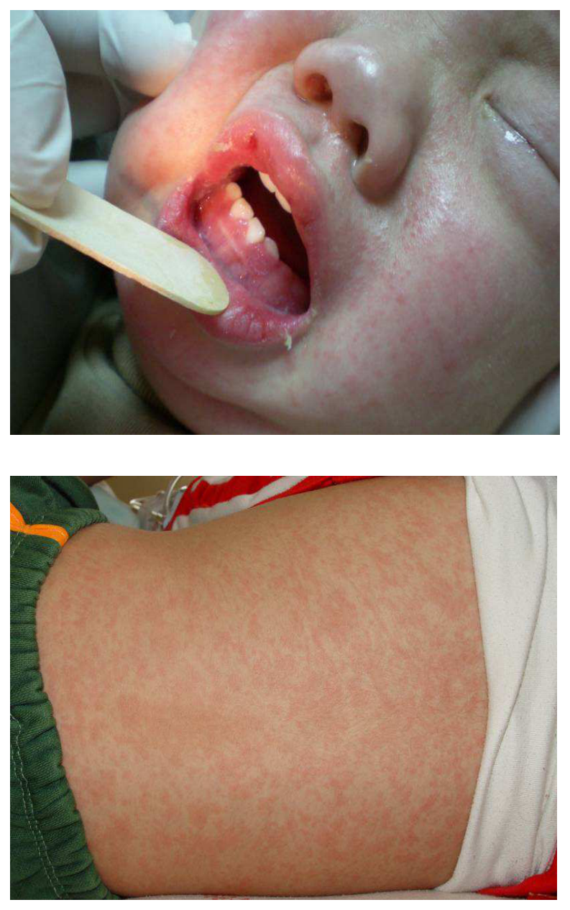
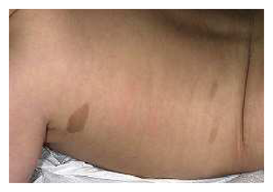
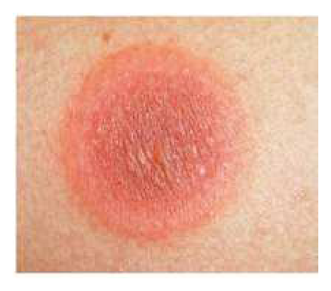
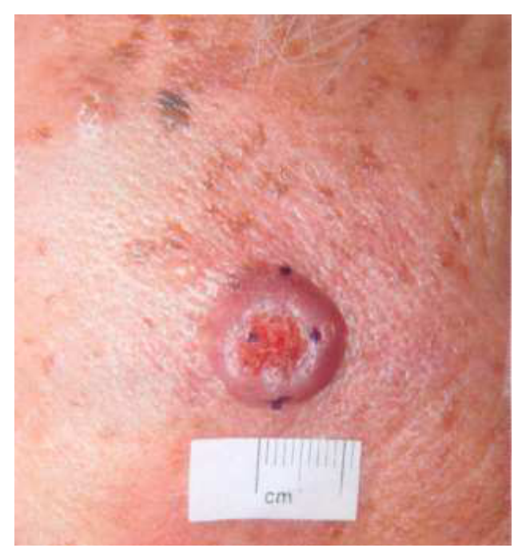
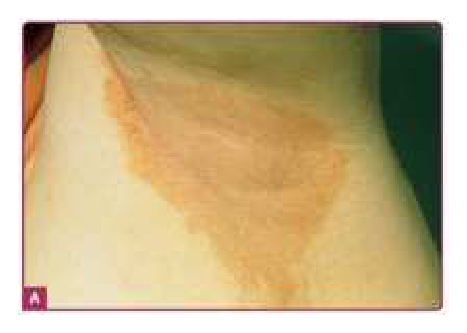
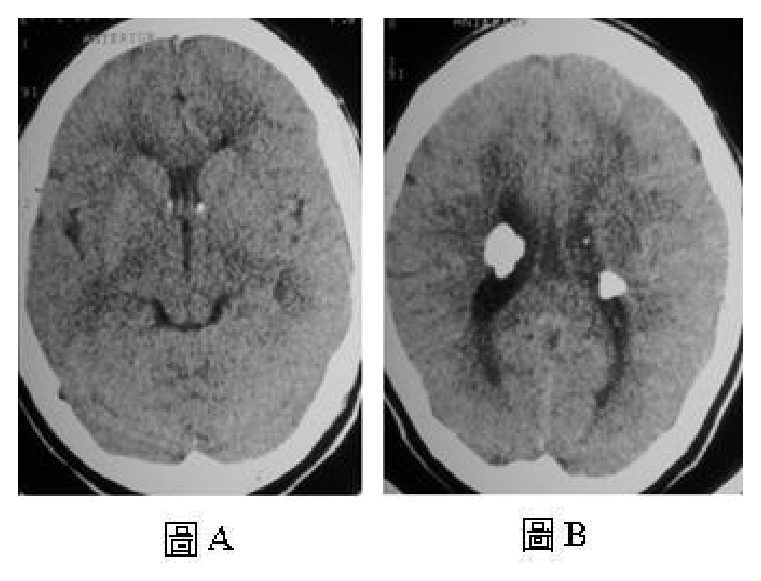
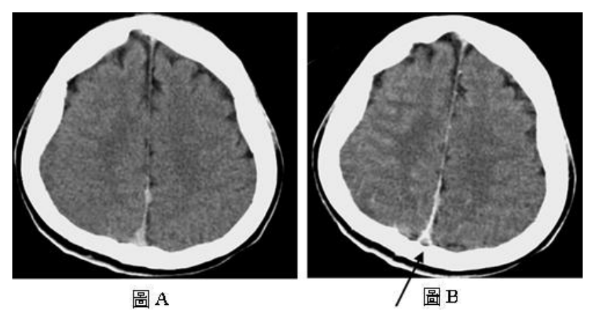

110 年第 2 次醫師醫學（四）（包括小兒科、皮膚科、神經科、精神科等科目及其相關臨床實例與醫學倫理）試題與答案
這一頁是民國 110 年第 2 次醫師醫學（四）（包括小兒科、皮膚科、神經科、精神科等科目及其相關臨床實例與醫學倫理）的整份歷屆試題，共 80 題，題目與標準答案出自考選部「國家考試試題及測驗式試題答案」開放資料，其中 80 題附有詳解。以下逐題列出題幹、選項與答案；要計時作答或記錄成績，請用線上練習。
考選部原始場次代碼：110080
線上作答這一科 →
全部 80 題
第 1 題
有關咽峽炎（Herpangina）的正確處置，不包括下列何者？
- （A）若有發燒，給與退燒藥
- （B）避免硬或燙的食物
- （C）給與抗生素
- （D）給與口腔止痛噴劑
答案：（C）
詳解與考點
正解：咽峽炎（herpangina）多為腸病毒造成的自限性病毒感染，處置重點是補充水分與症狀緩解，而非抗菌治療。沒有細菌感染證據時，抗生素不能縮短病程，反會增加不必要副作用與抗藥性，故不包括（C），選 C。
A：發燒造成不適時可使用退燒藥作症狀治療，屬支持性處置，敘述正確。
B：口腔與咽部潰瘍會使吞嚥疼痛，避免硬或燙的食物可減少黏膜刺激，屬適當照護。
D：口腔局部止痛可暫時改善疼痛、幫助進食飲水；它看似不是病因治療，但本病本來以症狀處置為主，故非答案。
本題考點：咽峽炎（herpangina）通常是腸病毒感染；支持性治療（supportive care）包括退燒、止痛與維持水分；抗生素（antibiotics）不治療病毒感染。
第 2 題
10 個月大男童 15 天前從國外返台，6 天前開始出現發燒、咳嗽、流鼻水和結膜炎，身體診察發現臉上和身上有皮疹如圖所示，下列何者是最有可能的診斷？

- （A）疱疹口腔炎（Herpetic gingivostomatitis）
- （B）猩紅熱（Scarlet fever）
- （C）麻疹（Measles）
- （D）玫瑰疹（Roseola infantum）
答案：（C）
詳解與考點
正解：男童自國外返臺後出現發燒、咳嗽、流鼻水與結膜炎，為麻疹典型前驅症狀；其後臉部開始出現紅色斑丘疹並延伸至軀幹，圖中可見臉部淡紅色皮疹；身體分布及向軀幹延伸的情形無法由此近照確認。麻疹（measles）皮疹通常由臉部、髮際附近向下擴散至軀幹與四肢，故選 C。
A：疱疹口腔炎（herpetic gingivostomatitis）主要表現為高燒、疼痛性牙齦炎、口腔黏膜水泡或潰瘍，常造成流口水與拒食；圖中可見口周及口腔黏膜發紅，但主軸是伴隨咳嗽、鼻炎、結膜炎的全身性斑丘疹，並非以口腔水泡潰瘍為主。
B：猩紅熱（scarlet fever）多由A群鏈球菌引起，常有咽喉痛、草莓舌與觸感粗糙如砂紙的皮疹，皮疹常由頸部、軀幹或腹股溝開始；本題的咳嗽、流鼻水、結膜炎及臉部先發後向下擴展的皮疹型態，較符合麻疹而非猩紅熱。
D：玫瑰疹（roseola infantum）常見於嬰幼兒，特徵是高燒持續數日後突然退燒，才出現以軀幹為主的淡紅色斑丘疹；本題皮疹出現時仍合併麻疹式前驅症狀，且由臉部開始，病程不符。
本題考點：麻疹（measles）的臨床病程——前驅期常見咳嗽（cough）、流鼻水（coryza）、結膜炎（conjunctivitis），接著出現由臉部向下擴散的斑丘疹（maculopapular rash）；須與以口腔潰瘍為主的疱疹口腔炎、砂紙樣皮疹的猩紅熱及退燒後軀幹出疹的玫瑰疹區分。
第 3 題
對於百日咳（Pertussis）的敘述，下列何者錯誤？
- （A）Bordetella pertussis 為致病病原體之一，致病機轉與毒素有關
- （B）建議隔離百日咳病人到 macrolide 抗生素治療滿五天以後
- （C）小於 3 個月嬰兒，容易表現典型的卡它期（catarrhal stage）、陣發期（paroxysmal stage）和恢復期（convalescent stage）症狀
- （D）為預防百日咳感染，青少年及成人亦建議追加接種減量破傷風白喉，非細胞性百日咳混合疫苗（Tdap）
答案：（C）
詳解與考點
正解：小於 3 個月的嬰兒。百日咳在年幼嬰兒常以呼吸暫停、發紺或餵食困難表現，未必出現典型的卡它、陣發與恢復三期咳嗽；把成人較典型的病程套用在小嬰兒，敘述錯誤的是（C），故選 C。
A：Bordetella pertussis 是重要致病菌，其黏附與多種毒素作用參與疾病表現，敘述正確。
B：有效 macrolide 治療滿 5 天後，傳染力大幅降低；隔離至此時點是感染控制原則，敘述正確。
D：青少年與成人接種減量破傷風、白喉、非細胞性百日咳混合疫苗（Tdap）可減少傳播給脆弱嬰兒的風險，敘述正確。
本題考點：百日咳（pertussis）由 Bordetella pertussis 引起；嬰兒百日咳（infant pertussis）可呈非典型呼吸暫停；macrolide 治療兼具降低傳播的作用。
第 4 題
下列何種不是活性減毒疫苗？
- （A）卡介苗（BCG vaccine）
- （B）輪狀病毒疫苗（Rotavirus vaccine）
- （C）麻疹、腮腺炎、德國麻疹疫苗（MMR vaccine）
- （D）Ｂ型肝炎疫苗（Hepatitis B vaccine）
答案：（D）
詳解與考點
正解：「不是活性減毒疫苗」。B 型肝炎疫苗以重組的 B 型肝炎表面抗原誘發免疫反應，不含可在人體內複製的活病毒或活菌，因此（D）不是活性減毒疫苗，故選 D。
A：卡介苗（BCG vaccine）使用減毒活的牛型分枝桿菌，屬活性減毒疫苗。
B：輪狀病毒疫苗（Rotavirus vaccine）為口服活性減毒疫苗，故不是答案。
C：麻疹、腮腺炎、德國麻疹疫苗（MMR vaccine）含活性減毒病毒，屬典型活性減毒疫苗。
本題考點：活性減毒疫苗（live attenuated vaccine）以減毒但具活性的病原體產生免疫；重組疫苗（recombinant vaccine）如 B 型肝炎疫苗不屬活性減毒疫苗。
第 5 題
我國衛生福利部國民健康署提供之兒童健康手冊中有嬰兒糞便顏色辨識圖的敘述，何者較正確？
- （A）辨識圖 1-3 號顏色視為正常
- （B）可用來篩檢肝膽疾病引起的黃疸
- （C）嬰兒糞便顏色正常即可排除膽道閉鎖
- （D）辨識圖 4-6 號顏色可以確診母乳性黃疸
答案：（B）
詳解與考點
正解：嬰兒糞便顏色辨識圖的用途。灰白或淡色糞便提示膽汁進入腸道不足，可能是膽道閉鎖等肝膽疾病造成的膽汁鬱積；此圖的功能是早期篩檢這類疾病，故（B）正確。
A：圖中 1-3 號並非一概視為正常；此項把顏色分級的臨床意義過度簡化，故錯。
C：正常糞便顏色可降低阻塞性膽汁鬱積的疑慮，但不能單憑一次顏色觀察完全排除膽道閉鎖，故錯。
D：母乳性黃疸主要依病史、理學檢查與膽紅素型態判斷；糞便顏色圖不能確診母乳性黃疸，故錯。
本題考點：嬰兒糞便顏色卡（stool color card）用於篩檢膽汁鬱積（cholestasis）與膽道閉鎖（biliary atresia）；淡色糞便是需儘速評估的警訊。
第 6 題
新生兒出生後馬上出現嚴重的呼吸窘迫和發紺，身體診察最大心音往右偏移，腹部凹陷且胸廓前後徑增加，下列何者為最有可能的診斷？
- （A）先天性發紺性心臟病（Congenital cyanotic heart disease）
- （B）先天性腸阻塞（Congenital intestinal obstruction）
- （C）食道閉鎖氣管食道廔管（Esophageal atresia with tracheoesophageal fistula）
- （D）先天性橫膈膜疝氣（Congenital diaphragmatic hernia）
答案：（D）
詳解與考點
正解：出生即嚴重呼吸窘迫與發紺，合併腹部凹陷、胸廓前後徑增加及心音右偏，表示腹腔臟器進入胸腔、壓迫同側肺並推移縱膈。這是先天性橫膈膜疝氣（congenital diaphragmatic hernia）的典型組合，故選 D。
A：先天性發紺性心臟病可造成發紺，但不能解釋凹陷腹部與心音偏右，故錯。
B：先天性腸阻塞通常以嘔吐、腹脹或排便異常為主，沒有胸腔受壓與縱膈偏移的體徵，故錯。
C：食道閉鎖合併氣管食道瘻管常見流涎、餵食後嗆咳與無法置入胃管，和本題的凹陷腹部不符，故錯。
本題考點：先天性橫膈膜疝氣（congenital diaphragmatic hernia）使腹腔臟器疝入胸腔；肺發育不全（pulmonary hypoplasia）與縱膈移位會造成出生後嚴重呼吸窘迫。
第 7 題
新生兒出生後身上發現有 10 幾個咖啡色斑點（café-au-lait spots）如圖所示，最可能罹患下列何種疾病？

- （A）Epidermal nevus syndrome
- （B）Giant nevus
- （C）Mongolian spots
- （D）Neurofibromatosis
答案：（D）
詳解與考點
正解：圖中可見嬰兒軀幹有一處邊界相對清楚的淺褐色色素斑；多發且達 10 餘個的資訊來自題幹，配合出生後即有 10 餘個 café-au-lait spots，最符合神經纖維瘤病（neurofibromatosis）。神經纖維瘤病第 1 型（neurofibromatosis type 1, NF1）常見多發咖啡牛奶斑，幼兒期可作為重要的早期皮膚線索；數量多且隨年齡持續出現時尤其應考慮此診斷，故選 D。
A：表皮痣症候群（epidermal nevus syndrome）的皮疹多為局部、線狀或沿 Blaschko lines 分布的粗糙增厚丘疹或斑塊，可合併其他系統異常；並非圖中這種多發平坦的咖啡牛奶色斑。
B：巨大黑色素細胞痣（giant nevus）通常是單一面積很大的深褐至黑色痣性斑塊，常可見毛髮增生或表面不規則；本題是多個淺褐色平坦斑點，外觀與分布均不符。
C：蒙古斑（Mongolian spots）是先天性真皮黑色素細胞增多造成的藍灰色斑，典型位於薦骨、臀部或下背部，並非淺褐色的 café-au-lait spots；因此雖同為出生時可見的色素性皮膚表現，色澤與典型部位不同。
本題考點：咖啡牛奶斑（café-au-lait spots）為均勻淺褐色、平坦的色素斑；神經纖維瘤病第 1 型（neurofibromatosis type 1, NF1）常以多發 café-au-lait spots 為早期線索；須與藍灰色、好發薦臀部的蒙古斑（Mongolian spots）及單一大型的巨大黑色素細胞痣（giant nevus）鑑別。
第 8 題
嬰兒時期之原始反射，何者不會隨著年紀成長而消失？
- （A）Parachute reflex
- （B）Moro reflex
- （C）Asymmetrical tonic neck reflex
- （D）Sucking reflex
答案：（A）
詳解與考點
正解：「不會隨年紀成長而消失」。parachute reflex 是保護性伸展反應，嬰兒被快速向下移動時會伸出手臂防護；它在發育後出現並持續存在，不是會被整合消失的原始反射，故選 A。
B：Moro reflex 是原始反射，隨中樞神經成熟而整合消失，故錯。
C：asymmetrical tonic neck reflex 亦屬原始反射，持續存在反而可能提示神經發育異常，故錯。
D：sucking reflex 早期是原始反射，之後轉為隨意控制的吸吮行為；反射型態本身不會持續，故錯。
本題考點：原始反射（primitive reflex）應隨神經成熟整合；保護反射（protective reflex）如 parachute reflex 出現後持續，是姿勢與平衡發展的指標。
第 9 題
Acetaminophen 中毒之兒童，發生昏迷（coma）、無反射（areflexia），下列治療方式，何者最適當？
- （A）低血容量（Hypovolemia）為常見情形，但無需處理
- （B）可注射 0.45%食鹽水治療低血容量情形
- （C）維持低血鈉對治療有益
- （D）可給與 N-acetylcysteine 治療
答案：（D）
詳解與考點
正解：acetaminophen 中毒。無論病人是否已出現嚴重神經學表現，N-acetylcysteine 可補充穀胱甘肽相關解毒能力、減少毒性代謝物對肝臟的傷害，是特異性治療，故選 D。
A：低血容量會降低器官灌流，應評估並矯正，不能置之不理，故錯。
B：低血容量復甦需使用適當等張液體；0.45% 食鹽水為低張液，不能作為此情況的優先復甦選擇，故錯。
C：刻意維持低血鈉會增加腦水腫與神經學惡化風險，對昏迷兒童沒有治療益處，故錯。
本題考點：acetaminophen 毒性（acetaminophen toxicity）與肝毒性代謝物 NAPQI 有關；N-acetylcysteine 是解毒治療；循環復甦（fluid resuscitation）須避免低張液造成低血鈉。
第 10 題
下列何種急性感染性腹瀉，並非由致病菌直接導致？
- （A）Staphylococcus aureus
- （B）Shigella species
- （C）Salmonella enteritidis
- （D）Campylobacter jejuni
答案：（A）
詳解與考點
正解：「並非由致病菌直接導致」。Staphylococcus aureus 食物中毒通常是食入食物中已形成的腸毒素，症狀主要由毒素造成，不必依賴細菌在腸道內直接侵襲或增殖，故選 A。
B：Shigella species 會侵入腸黏膜並造成發炎性腹瀉，細菌本身的感染是致病核心，故錯。
C：Salmonella enteritidis 感染腸道後引起發炎與腹瀉，屬病原菌直接感染，故錯。
D：Campylobacter jejuni 會定殖並侵襲腸道，引起發炎性腹瀉；它看似也有毒素相關機轉，但本題分類上仍屬細菌直接感染，故錯。
本題考點：預形成毒素（preformed toxin）會造成快速發作的食物中毒；Staphylococcus aureus 腸毒素（enterotoxin）與侵襲性細菌性腸炎（invasive bacterial enteritis）應區分。
第 11 題
六個月大嬰兒，過去無腹部開刀病史，突然發生持續膽汁性嘔吐（Bilious emesis），腹部 X 光呈現小腸以上有明顯腸阻塞，下列那一種疾病最有可能？
- （A）幽門狹窄（Pyloric stenosis）
- （B）腸扭結（Midgut volvulus）
- （C）迴腸閉鎖（Ileal atresia）
- （D）胎糞性腸阻塞（Meconium ileus）
答案：（B）
詳解與考點
正解：未手術嬰兒突然持續膽汁性嘔吐，且 X 光顯示近端小腸阻塞。膽汁性嘔吐代表阻塞在 Vater 壺腹遠端；急性發作要優先懷疑腸旋轉不良造成的腸扭結（midgut volvulus），因可迅速腸缺血壞死，故選 B。
A：幽門狹窄多在較小嬰兒造成非膽汁性噴射性嘔吐，阻塞位置在膽汁進入十二指腸之前，故錯。
C：迴腸閉鎖為先天固定性阻塞，通常較早出現症狀，不能最貼切解釋突然急性發作，故錯。
D：胎糞性腸阻塞多於新生兒期表現，常與囊性纖維化相關，年齡與急性型態都較不符，故錯。
本題考點：膽汁性嘔吐（bilious emesis）視為腸阻塞警訊；腸扭結（midgut volvulus）由腸旋轉不良（malrotation）引起，可導致急性腸缺血。
第 12 題
下列何種營養素，不是主要在十二指腸（Duodenum）和近端空腸（Proximal jejunum）被吸收？
- （A）鎂（Magnesium）
- （B）鐵（Iron）
- （C）葉酸（Folic acid）
- （D）維生素 B12（Vitamin B12）
答案：（D）
詳解與考點
正解：吸收部位。維生素 B12 必須先與內在因子結合，主要在末端迴腸由特異性受體吸收，而不是十二指腸與近端空腸，故選 D。
A：鎂的吸收主要在小腸，十二指腸與空腸是重要吸收區域，故錯。
B：鐵主要在十二指腸及近端空腸吸收，這也是近端小腸病變易造成缺鐵的原因，故錯。
C：葉酸主要在近端空腸吸收，與題目所述區域相符，故錯。
本題考點：腸道營養吸收（intestinal nutrient absorption）具有區域性；內在因子（intrinsic factor）結合的維生素 B12 於末端迴腸（terminal ileum）吸收。
第 13 題
7 歲男童因肺炎住院，身體診察發現臉色蒼白、呼吸急促；血液尿素氮（BUN）90 mg/dL、肌酐酸（Creatinine）7.8 mg/dL、血紅素（hemoglobin）4.5 g/dL、血小板（platelet）50,000/μL，血液抹片發現有許多破碎的紅血球。下列何者為最可能的診斷？
- （A）急性白血病（Acute leukemia）
- （B）原發性血小板低下（Idiopathic thrombocytopenia）
- （C）溶血性尿毒症候群（Hemolytic uremic syndrome）
- （D）伊凡斯症候群 （Evans syndrome）
答案：（C）
詳解與考點
正解：腎功能急遽惡化（BUN 90 mg/dL、Creatinine 7.8 mg/dL）、嚴重貧血、血小板低下與破碎紅血球。這是微血管病性溶血性貧血合併急性腎損傷和血小板低下的三聯徵，最符合溶血性尿毒症候群（hemolytic uremic syndrome），故選 C。
A：急性白血病可有貧血與血小板低下，但破碎紅血球及急性腎損傷三聯徵不是其典型組合，故錯。
B：原發性血小板低下以孤立性血小板低下為主，無法解釋溶血性貧血與腎衰竭，故錯。
D：伊凡斯症候群是自體免疫性溶血性貧血合併免疫性血小板低下，通常不是以破碎紅血球和明顯腎損傷為核心，故錯。
本題考點：溶血性尿毒症候群（hemolytic uremic syndrome, HUS）的三聯徵為微血管病性溶血性貧血（microangiopathic hemolytic anemia）、血小板低下與急性腎損傷。
第 14 題
1 歲男童被診斷為泌尿道感染（Urinary tract infection）合併發燒。下列何種檢查對泌尿道感染之評估最不具價值性？
- （A）Intravenous pyelography（IVP）
- （B）Renal ultrasonography
- （C）Voiding cystourethrogram（VCUG）
- （D）Renal scintigraphy with technetium-labeled dimercaptosuccinic acid（DMSA）
答案：（A）
詳解與考點
正解：嬰幼兒發燒性泌尿道感染的影像評估價值。靜脈腎盂攝影（IVP）需注射顯影劑並以 X 光描繪泌尿道，較新的超音波、排尿性膀胱尿道攝影與 DMSA 腎皮質掃描分別能更針對結構、膀胱輸尿管逆流與腎實質傷害評估；IVP 的角色最有限，故選 A。
B：腎臟超音波（renal ultrasonography）可非侵入性評估腎臟大小、腎水腫與明顯結構異常，具實用價值，故錯。
C：排尿性膀胱尿道攝影（VCUG）可評估膀胱輸尿管逆流及下泌尿道解剖，於適當風險個案仍有價值，故錯。
D：DMSA 腎皮質掃描可評估腎皮質受損或疤痕，對反覆或非典型感染的腎臟評估具價值，故錯。
本題考點：兒童泌尿道感染（urinary tract infection）的影像評估包括腎臟超音波（renal ultrasonography）、VCUG 與 DMSA scan；IVP 因侵入性與資訊優勢不足，現今價值較低。
第 15 題
下列何種引起兒童急性腎衰竭之疾病，其尿鈉（Urine sodium）濃度的高低與其他三者不同？
- （A）急性腸胃炎引起脫水（Dehydration）
- （B）急性腎絲球發炎 （Acute glomerulonephritis）
- （C）藥物引起急性腎小管壞死（Acute tubular necrosis）
- （D）泌尿道阻塞（Urinary tract obstruction）
本題送分，無標準答案
詳解與考點
本題官方公告送分。
第 16 題
出生 3 天大之新生兒發生抽搐（Neonatal seizure），下列敘述何者錯誤？
- （A）較少以 Generalized tonic-clonic seizures 來表現
- （B）早產兒容易以 Subtle seizures 來表現
- （C）此時期最常見的病因是感染導致
- （D）除非有其他確定病因，一般而言腦脊髓液檢查是必須的
答案：（C）
詳解與考點
正解：出生後第 3 天的新生兒抽搐，問最常見病因。新生兒抽搐多為急性症狀性，缺氧缺血性腦病變、腦出血、腦中風或代謝異常比中樞感染常見；因此（C）稱「感染導致」為此時期最常見病因的敘述錯誤，故選 C。
A：新生兒腦部與神經網路尚未成熟，臨床上較少呈現典型 generalized tonic-clonic seizures，敘述正確。
B：早產兒的發作常很細微，例如眼球偏移、口舌動作或呼吸型態改變，subtle seizures 是重要表現，敘述正確。
D：若沒有明確且充分的其他病因，需考慮中樞感染並以腦脊髓液檢查協助鑑別，敘述正確。
本題考點：新生兒抽搐（neonatal seizure）常為急性症狀性發作；缺氧缺血性腦病變（hypoxic-ischemic encephalopathy）是重要常見原因；subtle seizures 在早產兒尤其常見。
第 17 題
6 歲兒童突然發生急性腦動脈缺血性梗塞（Cerebral ischemic stroke），下列何者是最不常見的病因？
- （A）高血壓
- （B）先天性心臟病
- （C）血液凝血功能異常
- （D）腦血管構造異常
答案：（A）
詳解與考點
正解：6 歲兒童的急性缺血性腦中風。兒童中風的病因分布和成人不同，先天性心臟病、凝血異常與腦血管構造異常都是重要原因；高血壓雖是成人常見危險因子，卻不是小兒急性缺血性中風的常見病因，故選 A。
B：先天性心臟病可造成心源性栓塞，是兒童缺血性中風的重要病因，故錯。
C：血栓傾向或其他凝血功能異常會增加血管內血栓形成風險，屬小兒中風的病因之一，故錯。
D：腦血管構造異常可造成局部狹窄、血流障礙或血栓，和兒童缺血性中風有關，故錯。
本題考點：兒童缺血性腦中風（pediatric arterial ischemic stroke）常見病因包括心臟病（cardiac disease）、血栓傾向（thrombophilia）與腦血管病變（cerebrovascular arteriopathy）；其病因譜不同於成人。
第 18 題
5 個月大男嬰，發現肌肉無力來求診，身體診察無肝臟腫大，神經學診察發現面部表情正常，但有四肢低張力及舌頭震顫，最可能為何種疾病？
- （A）Spinal muscular atrophy
- （B）Duchenne muscular dystrophy
- （C）Guillain-Barré syndrome
- （D）Acute myositis
答案：（A）
詳解與考點
正解：5 個月男嬰、四肢低張力與舌頭震顫。嬰兒型脊髓性肌肉萎縮症（spinal muscular atrophy）因前角細胞退化而造成對稱性近端無力、低張力與舌束顫動；面部表情相對保留且無肝腫大，也支持此診斷，故選 A。
B：Duchenne muscular dystrophy 通常在幼兒期才出現進行性近端肌無力，不會在 5 個月以舌束顫動為典型表現，故錯。
C：Guillain-Barré syndrome 是急性周邊神經病變，較常在感染後出現進行性無力，不符合此年齡與典型舌束顫動，故錯。
D：acute myositis 多為急性肌痛和短暫步態異常，並非嬰兒期慢性低張力與舌頭震顫的型態，故錯。
本題考點：脊髓性肌肉萎縮症（spinal muscular atrophy, SMA）是下運動神經元疾病；前角細胞（anterior horn cell）受損造成低張力、肌無力與束顫動（fasciculation）。
第 19 題
接受 hypothalamic-pituitary 手術的病童，一星期後發現血鈉 125 mmol/L，尿鈉 80 mmol/L，血中滲透壓低，尿中滲透壓高，且血管內容積（intravascular volume）正常，下列何者為最可能之診斷？
- （A）Syndrome of inappropriate antidiuretic hormone secretion（SIADH）
- （B）Cerebral salt wasting
- （C）Central diabetes insipidus
- （D）Adrenal crisis
答案：（A）
詳解與考點
正解：下視丘—腦下垂體手術後，低血鈉、血漿低滲透壓、尿液不當濃縮與尿鈉 80 mmol/L，但血管內容積正常。這表示 ADH 分泌與低滲透壓狀態不相稱，腎臟持續保水而出現等容性低鈉血症，最符合 SIADH，故選 A。
B：cerebral salt wasting 會造成腎性鈉流失與低血容量；本題明示血管內容積正常，故錯。
C：central diabetes insipidus 會因 ADH 缺乏而排出大量稀尿，常見高血鈉或血漿高滲透壓，與本題相反，故錯。
D：adrenal crisis 可導致低血鈉，但通常伴隨低血壓或容量不足等腎上腺功能不全表現，且不能如 SIADH 般完整解釋本題的不當濃縮尿，故錯。
本題考點：抗利尿激素分泌不當症候群（syndrome of inappropriate antidiuretic hormone secretion, SIADH）造成等容性低鈉血症（euvolemic hyponatremia）；其特徵為低血漿滲透壓與不當偏高的尿液滲透壓、尿鈉。
第 20 題
8 歲男生兩側睪丸大小均為 5 c.c.，性釋素檢查（GnRH test）結果顯示 FSH 10.5 mIU/ml、LH 5.6 mIU/ml、Testosterone 125 ng/dl，下列何者最符合男童診斷？
- （A）生殖細胞瘤合併性早熟
- （B）中樞性性早熟
- （C）腎上腺早熟症（Premature adrenarche）
- （D）巨大睪丸（Macroorchidism）
答案：（B）
詳解與考點
正解：8 歲男童、雙側睪丸各 5 c.c.，且 GnRH test 後 FSH 10.5 mIU/ml、LH 5.6 mIU/ml，並有 testosterone 125 ng/dl。睪丸已增大且腦下垂體性腺軸對 GnRH 有反應，代表性腺軸已被啟動，最符合中樞性性早熟（central precocious puberty），故選 B。
A：生殖細胞瘤相關的性早熟常由 hCG 等周邊訊號驅動，未必呈現本題所示的中樞性 GnRH 軸活化，故錯。
C：premature adrenarche 以腎上腺雄性素造成陰毛或體味變化為主，不會使雙側睪丸明顯增大及出現此性腺軸反應，故錯。
D：macroorchidism 指睪丸異常增大，不能單獨解釋 GnRH 反應與 testosterone 上升；它看似與 5 c.c. 睪丸大小有關，但本題核心是青春期軸啟動，故錯。
本題考點：中樞性性早熟（central precocious puberty）源於下視丘—腦下垂體—性腺軸（hypothalamic-pituitary-gonadal axis）提早活化；男童睪丸雙側增大與 GnRH 刺激反應是關鍵線索。
第 21 題
有關 1 歲 2 個月兒童的發展，下列何者應懷疑發展遲緩，需建議進一步就醫檢查？
- （A）不會撕紙
- （B）不會堆兩塊積木
- （C）不會拉著物體自己站起來
- （D）不會有意義的叫爸爸、媽媽
答案：（C）
詳解與考點
正解：1 歲 2 個月仍不會拉著物體自行站起。由拉站到扶走是粗大動作發展的重要早期里程碑，至此年齡仍完全無法拉站應懷疑粗大動作發展遲緩，需進一步評估神經肌肉與整體發展，故選 C。
A：撕紙的精細動作成熟度有個別差異，單獨不會撕紙不足以在此年齡直接判定明顯發展遲緩，故錯。
B：堆兩塊積木屬精細動作里程碑，表現時間有合理個別差異；相較於完全不會拉站，警訊性較低，故錯。
D：有意義地叫爸爸、媽媽是重要語言里程碑，但題目年齡下單獨此項未達到時應結合聽力、理解與其他語言表現判讀；本題最明確的警訊是（C）的粗大動作落後，故錯。
本題考點：發展里程碑（developmental milestones）須依粗大動作、精細動作、語言與社會性整體評估；拉站（pulling to stand）明顯延遲是粗大動作發展遲緩的警訊。
第 22 題
下列何者不屬於全身性紅斑狼瘡（Systemic lupus erythematosus）的診斷標準？
- （A）關節炎（Arthritis）
- （B）白血球增加（Leukocytosis）
- （C）抗核抗體（Antinuclear antibody, ANA）陽性
- （D）漿膜炎（Serositis）
答案：（B）
詳解與考點
正解：全身性紅斑狼瘡的診斷分類項目。血液學異常可見白血球減少而非白血球增加；（B）白血球增加不屬於其典型分類表現，故選 B。
A：關節炎是全身性紅斑狼瘡常見的肌肉骨骼表現，也是診斷分類時會納入評估的項目，故非本題答案。
C：抗核抗體（antinuclear antibody, ANA）陽性是全身性紅斑狼瘡的重要免疫學線索；雖非 ANA 陽性者都患病，但在適當臨床情境下是關鍵分類依據，故非答案。
D：漿膜炎（serositis），例如胸膜炎或心包膜炎，可見於全身性紅斑狼瘡，屬其可納入評估的臨床表現，故非答案。
本題考點：全身性紅斑狼瘡（systemic lupus erythematosus, SLE）的分類特徵；血液學異常（hematologic abnormality）常見白血球減少、血小板減少或自體免疫溶血，而非 leukocytosis。
第 23 題
有關 Leukocyte adhesion deficiency 的敘述，下列何者正確？
- （A）為性聯遺傳
- （B）常有臍帶感染、且合併臍帶較晚脫落之病史
- （C）通常嗜中性白血球絕對值會下降
- （D）感染部位會產生比正常人更多量的膿液為此病的典型表現
答案：（B）
詳解與考點
正解：白血球黏附缺陷症的「無膿、白血球高、臍帶延遲脫落」組合。Leukocyte adhesion deficiency 因白血球黏附與移行至感染組織失常，常有反覆細菌感染、臍部感染及臍帶延遲脫落，故選 B。
A：此病典型為常染色體隱性遺傳，並非性聯遺傳，故錯。
C：嗜中性白血球無法順利離開血管進入組織，血中絕對嗜中性白血球數通常升高而非下降；此處看似有感染應消耗白血球，但核心缺陷是移行障礙。
D：感染處因嗜中性白血球不能有效到達病灶，典型是膿液形成少或缺乏，並非產生更多膿液，故錯。
本題考點：白血球黏附缺陷症（leukocyte adhesion deficiency）；白血球外滲（leukocyte extravasation）與整合素（integrin）介導的黏附；臨床線索為反覆細菌感染、臍帶延遲脫落、嗜中性白血球增多及少膿。
第 24 題
有關食物過敏的敘述，下列何者錯誤？
- （A）對於雞蛋過敏的小朋友，不可施打 MMR 疫苗（Measles-Mumps-Rubella vaccine）
- （B）躁動不安、吐奶、腹瀉可能為嬰兒食物過敏之症狀
- （C）健康嬰兒哺餵母乳時，媽媽不需要刻意避開奶、蛋等高過敏性的食物，來預防嬰兒的食物過敏
- （D）牛奶過敏的病童，大部份長大後症狀會改善
答案：（A）
詳解與考點
正解：題目問錯誤敘述，關鍵在雞蛋過敏與 MMR 疫苗的關係。MMR 疫苗不因單純雞蛋過敏而成為禁忌，多數雞蛋過敏兒童可依常規接種；（A）一律不可施打的說法錯誤，故選 A。
B：嬰兒食物過敏可表現為躁動、嘔吐或吐奶、腹瀉等腸胃道症狀，仍須配合進食關聯與其他鑑別診斷判讀，敘述合理，故非答案。
C：健康嬰兒哺餵母乳時，母親一般不需為預防嬰兒食物過敏而常規迴避奶、蛋等食物；無症狀即廣泛限食未必有益，故非答案。
D：牛奶蛋白過敏在兒童期常隨年齡增長而改善，因此此敘述正確，故非答案。
本題考點：食物過敏（food allergy）的腸胃道表現與自然病程；疫苗接種（immunization）——雞蛋過敏本身通常不是 MMR vaccine 的禁忌。
第 25 題
1 歲男童，因最近時常皮膚瘀青而來就診，下列何者不是初步篩檢（screening tests）項目？
- （A）完整血球檢查（Complete blood cell count）
- （B）血小板功能性檢查（platelet function studies）
- （C）凝血時間：Prothrombin time（PT）
- （D）凝血時間：activated partial thromboplastin time（aPTT）
答案：（B）
詳解與考點
正解：幼兒反覆瘀青的「初步」篩檢。初步評估先用完整血球計數確認血小板數量，並以 PT、aPTT 篩檢外因性與內因性凝血路徑；血小板功能性檢查屬較進一步的檢查，故選 B。
A：完整血球檢查（complete blood cell count）可評估血小板數量及其他血球異常，是出血傾向的基本初篩，故非答案。
C：PT 評估外因性及共同凝血路徑，初步篩檢可協助辨識凝血因子不足、肝病或維生素 K 相關問題，故非答案。
D：aPTT 評估內因性及共同凝血路徑，與 PT 互補，常列入初步出血傾向檢查，故非答案。
本題考點：出血傾向（bleeding diathesis）的初步評估；凝血篩檢（coagulation screening）包括 platelet count、prothrombin time 與 activated partial thromboplastin time；血小板功能檢查（platelet function studies）用於進一步釐清。
第 26 題
兒童急性淋巴性白血病（Acute lymphoblastic leukemia）的化學治療藥物中，下列那一種最常引起心肌病變（Cardiomyopathy）？
- （A）Vincristine
- （B）Methotrexate
- （C）L-asparaginase
- （D）Doxorubicin
答案：（D）
詳解與考點
正解：急性淋巴性白血病化療中最典型的心肌病變藥物。Doxorubicin 為 anthracycline，具有累積性心臟毒性，可造成心肌病變與心衰竭，故選 D。
A：vincristine 最具代表性的毒性是周邊與自律神經病變，例如周邊神經病變或腸麻痺，並非典型心肌病變。
B：methotrexate 主要需注意骨髓抑制、黏膜炎、肝毒性與高劑量時的腎毒性等，心肌病變不是其代表性不良反應。
C：L-asparaginase 常見胰臟炎、過敏反應、血栓或出血傾向等問題，與 doxorubicin 的心臟毒性不同，故非答案。
本題考點：anthracycline 心臟毒性（anthracycline cardiotoxicity）；doxorubicin 的累積性心肌病變（cardiomyopathy）；急性淋巴性白血病（acute lymphoblastic leukemia, ALL）治療藥物的不良反應辨識。
第 27 題
2 歲孩童出現眼陣攣—肌陣攣—共濟失調症候群 （Opsoclonus-myoclonus-ataxia syndrome)，腹部電腦斷層檢查發現腫瘤，最有可能為下列何種腫瘤？
- （A）威爾姆氏腫瘤 （Wilms tumor）
- （B）神經母細胞瘤（Neuroblastoma）
- （C）生殖細胞瘤（Germ cell tumor）
- （D）橫紋肌肉瘤 （Rhadomyosarcoma）
答案：（B）
詳解與考點
正解：幼兒的眼陣攣—肌陣攣—共濟失調症候群合併腹部腫瘤。此副腫瘤神經症候群最典型相關腫瘤為神經母細胞瘤（neuroblastoma），故選 B。
A：Wilms tumor 也是兒童腹部腫瘤，但典型表現是無痛性腹部腫塊、血尿或高血壓，與眼陣攣—肌陣攣—共濟失調症候群的關聯不如 neuroblastoma。
C：生殖細胞瘤可發生於不同部位，臨床線索依原發位置而異，並非此特徵性神經副腫瘤症候群的典型聯想。
D：橫紋肌肉瘤為兒童軟組織惡性腫瘤，可出現在頭頸、泌尿生殖道等處，但不典型引起本題神經症候群。
本題考點：眼陣攣—肌陣攣—共濟失調症候群（opsoclonus-myoclonus-ataxia syndrome）；副腫瘤症候群（paraneoplastic syndrome）；神經母細胞瘤（neuroblastoma）。
第 28 題
有關兒童心房中膈缺損（Atrial septal defect，ASD）之敘述，下列何者錯誤？
- （A）單純 ASD 第二型，觸診除了有右心室挺舉（Heave）現象外，常可摸到心音震顫（thrill）
- （B）靜脈竇型（Sinus venous type）ASD 常合併部分肺靜脈回流異常（partial anomalous pulmonary venous return）
- （C）ASD 若不處理，成年後常可見心房心律不整（Atrial dysrhythmia）
- （D）大部分的第二型 ASD 可考慮免開刀而施行心導管經皮栓塞術（Device occlusion）
答案：（A）
詳解與考點
正解：題目問錯誤敘述，關鍵在單純 secundum ASD 的典型理學檢查。左至右分流可造成右心室 heave 與肺動脈區收縮期射出雜音，但通常不會有可觸及的 thrill；（A）稱常可摸到震顫不正確，故選 A。
B：靜脈竇型（sinus venosus type）ASD 常合併部分肺靜脈回流異常，兩者是重要的解剖學關聯，故非答案。
C：未處理 ASD 長期右心房擴張，成年後較易出現心房性心律不整，敘述正確，故非答案。
D：解剖條件合適的第二型 ASD 多可採心導管經皮裝置關閉術；此選項看似過度概括，但其「大部分可考慮」符合臨床處置方向，故非答案。
本題考點：心房中膈缺損（atrial septal defect, ASD）；第二型 ASD（secundum ASD）的固定分裂第二心音與肺血流增加；sinus venosus ASD 與部分肺靜脈回流異常（partial anomalous pulmonary venous return）的關聯。
第 29 題
有關風濕熱（Rheumatic fever）敘述，下列何者錯誤？
- （A）致病機轉可能是自體免疫（Autoimmunity）導致
- （B）多發性關節炎（Polyarthritis）為最常見，主要是侵犯小關節
- （C）侵犯心臟，以二尖瓣最常見，肺動脈瓣則少見
- （D）皮下結節是在關節伸側面，且不會有壓痛
答案：（B）
詳解與考點
正解：題目問錯誤敘述，關鍵是風濕熱關節炎侵犯的關節大小。急性風濕熱的多發性關節炎典型為遊走性、侵犯大關節，例如膝、踝、肘、腕；（B）稱主要侵犯小關節錯誤，故選 B。
A：風濕熱發生於 A 群鏈球菌感染後，與分子模擬引發的自體免疫反應有關，敘述正確，故非答案。
C：風濕性心臟炎常影響二尖瓣，肺動脈瓣受累較少見，敘述符合典型瓣膜侵犯型態，故非答案。
D：皮下結節多位於伸側關節、脊柱或肌腱處，通常無痛，是 Jones criteria 的主要表現之一，但臨床上少見，常伴隨心臟炎，故非答案。
本題考點：急性風濕熱（acute rheumatic fever）；Jones criteria；遊走性多發性關節炎（migratory polyarthritis）主要侵犯大關節。
第 30 題
法洛氏四重症（Tetrology of Fallot）的病童，最少發生下列何種併發症？
- （A）腦血栓（Cerebral thromboses）
- （B）感染性心內膜炎（Infective endocarditis）
- （C）鬱血性心衰竭（Congestive heart failure）
- （D）腦膿瘍（Brain abscess）
答案：（C）
詳解與考點
正解：法洛氏四重症的慢性缺氧與右向左分流併發症。慢性紫紺造成紅血球增多與血液黏稠，易有腦血栓、腦膿瘍；異常心內血流亦增加感染性心內膜炎風險。相較之下，未矯正法洛氏四重症因肺血流減少，鬱血性心衰竭最少見，故選 C。
A：慢性缺氧可造成繼發性紅血球增多與高黏稠狀態，增加腦血栓風險，故非答案。
B：先天性心臟病的結構異常與湍流血流可增加感染性心內膜炎風險，故非答案。
D：右向左分流使靜脈端細菌可能繞過肺部過濾進入體循環，腦膿瘍是重要併發症，故非答案。
本題考點：法洛氏四重症（tetralogy of Fallot）；右向左分流（right-to-left shunt）與慢性低氧血症；紫紺性先天性心臟病的腦血栓與腦膿瘍。
第 31 題
兒童時期發生肥胖容易在青少年期併發糖尿病，此類情況為某些特定遺傳疾病之主要表徵，下列何者疾病最不可能？
- （A）Alstrom syndrome
- （B）Bardet-Biedl syndrome
- （C）McCune-Albright syndrome
- （D）Prader-Willi syndrome
答案：（C）
詳解與考點
正解：幼兒肥胖延續至青少年並併發糖尿病的遺傳症候群。McCune-Albright syndrome 的典型組合是纖維性骨發育不良、咖啡牛奶斑與周邊性性早熟，並非以幼年肥胖及糖尿病為主要表徵，故最不可能的是 C。
A：Alström syndrome 可見肥胖、胰島素阻抗與第 2 型糖尿病，並常合併視聽覺等多系統問題，故非答案。
B：Bardet-Biedl syndrome 的重要表現包括肥胖與代謝異常，也可合併視網膜病變、多指症及腎臟問題，故非答案。
D：Prader-Willi syndrome 因食慾亢進而易形成嚴重肥胖，進而增加糖尿病風險，是本題情境的典型誘答之一，但確實符合肥胖相關症候群。
本題考點：遺傳性肥胖症候群（genetic obesity syndromes）；Alström syndrome、Bardet-Biedl syndrome 與 Prader-Willi syndrome；McCune-Albright syndrome 的纖維性骨發育不良（fibrous dysplasia）與內分泌表現。
第 32 題
出生 7 天大嬰兒吐奶、吸奶無力，血液檢查 pH 值為 7.21，pCO2：24 torr，HCO3-：12 mEq/L，Na+：140 mEq/L，K+：5.6 mEq/L。尿液之 ketone bodies 為陽性，病嬰身上則有一種臭腳味。此病嬰最有可能為下列何種疾病？
- （A）苯酮尿症（Phenylketonuria）
- （B）中鏈脂肪酸去氫酶缺乏症（Medium-chain acyl CoA dehydrogenase deficiency）
- （C）戊二酸尿症第一型（Glutaric aciduria type I）
- （D）異戊酸血症（Isovaleric acidemia）
答案：（D）
詳解與考點
正解：新生兒代謝性酸中毒、尿酮體陽性與臭腳味。pH 7.21 為酸血症，HCO3- 12 mEq/L 降低表示代謝性酸中毒；pCO2 24 torr 下降是呼吸代償。異戊酸血症會累積異戊酸，產生典型臭腳味，故選 D。
A：苯酮尿症可造成神經發育問題與特殊體味，但並非以新生兒期酮酸中毒及臭腳味為典型組合。
B：中鏈脂肪酸去氫酶缺乏症常在禁食或感染後出現低血糖與低酮性狀態；本題尿酮體陽性，與其典型表現不符。
C：戊二酸尿症第一型可有代謝危象與神經學後遺症，但沒有異戊酸血症的特徵性臭腳味，故非答案。
本題考點：有機酸血症（organic acidemia）；異戊酸血症（isovaleric acidemia）的代謝性酸中毒與臭腳味；代謝性酸中毒（metabolic acidosis）的 pH、HCO3- 與呼吸代償判讀。
第 33 題
有關 DiGeorge syndrome 的敘述，下列何者錯誤？
- （A）染色體 22q11.2 微小缺失（Microdeletion）
- （B）腭咽畸形（Velopharyngeal incompetence）
- （C）胸腺發育異常（Hypoplasia of the thymus）
- （D）高血鈣（Hypercalcemia）
答案：（D）
詳解與考點
正解：題目問錯誤敘述，關鍵是 DiGeorge syndrome 的副甲狀腺發育不足。副甲狀腺低形成會造成低血鈣，並可出現手足搐搦；（D）高血鈣與典型病理生理相反，故選 D。
A：22q11.2 微小缺失是 DiGeorge syndrome 的常見遺傳異常，故非答案。
B：腭咽功能不全可造成餵食及語音問題，是此症候群可見的顱顏與腭部異常，故非答案。
C：第三、四咽囊發育異常可導致胸腺低形成，造成 T 細胞免疫缺陷，敘述正確，故非答案。
本題考點：DiGeorge syndrome/22q11.2 deletion syndrome；第三、四咽囊（pharyngeal pouches）發育異常；胸腺低形成（thymic hypoplasia）與低血鈣（hypocalcemia）。
第 34 題
30 歲女性，在軀幹出現一個直徑約 5 公分的紅斑，如圖所示，發生病灶前她曾因經痛自行服用 diclofenac；半年前她也曾服用該藥而在相同部位出現相似皮疹。最適當的診斷為：

- （A）多形性紅斑
- （B）固定藥物疹
- （C）遠心性環狀紅斑
- （D）自體免疫水疱症
答案：（B）
詳解與考點
正解：病灶為軀幹單發、界線相對清楚的圓形紅斑，且每次服用 diclofenac 後都在完全相同部位復發，最符合固定藥物疹（fixed drug eruption）。此反應由特定藥物誘發，停藥後病灶可消退並常留下色素沉著；再次暴露同一藥物時，因局部記憶 T 細胞反應而於原處迅速再現，故選 B。
A：多形性紅斑（erythema multiforme）常見典型靶形病灶，可有多發且對稱分布於四肢伸側或黏膜受累；圖中是單一均勻紅斑，加上與 diclofenac 重複暴露及同一位置復發的關係，較不符合。
C：遠心性環狀紅斑（erythema annulare centrifugum）會由中央向外擴大形成環狀病灶，常可見環狀邊緣或內緣鱗屑；本圖未呈現典型向外擴展的環狀形態，也無法解釋每次服藥皆固定原處發作。
D：自體免疫水疱症（autoimmune blistering disease）通常以水疱、糜爛或較廣泛反覆的皮膚與黏膜病灶表現；本題為單一紅斑，沒有水疱，並具有明確藥物再暴露後原位復發的特徵，故不符。
本題考點：固定藥物疹（fixed drug eruption）——同一藥物再次暴露後，皮疹固定於同一解剖部位復發；非類固醇抗發炎藥（nonsteroidal anti-inflammatory drugs, NSAIDs）包括 diclofenac，為可誘發藥疹的藥物類別；鑑別時須掌握固定原位復發與多形性紅斑的靶形、多發病灶差異。
第 35 題
關於基底細胞癌（basal cell carcinoma）的敘述，下列何者錯誤？
- （A）好發於頭頸部
- （B）好發於老年人
- （C）極易轉移到內臟器官
- （D）可以考慮莫氏切除手術（Mohs micrographic surgery）
答案：（C）
詳解與考點
正解：題目問錯誤敘述，關鍵是基底細胞癌的轉移傾向。基底細胞癌可局部破壞組織，但遠端轉移極罕見；（C）稱極易轉移至內臟器官錯誤，故選 C。
A：基底細胞癌與日光暴露相關，常見於頭頸部等日曬部位，敘述正確，故非答案。
B：累積紫外線曝露使其較常出現於老年人，故非答案。
D：高風險部位、邊界不清或復發病灶可考慮 Mohs micrographic surgery，以兼顧完整切除與組織保留，故非答案。
本題考點：基底細胞癌（basal cell carcinoma, BCC）；局部侵襲性（local invasiveness）與極低轉移率；莫氏顯微手術（Mohs micrographic surgery）。
第 36 題
中年男性主訴自兩個月前起，臉上有一快速增生的腫瘤，理學檢查發現在病患的右臉頰，有一個約 2 公分的暗紅色結節，結節的周圍突起，中央略微凹陷呈火山口狀，內有角質堆質，如圖所示。此病患最可能罹患下列何者？

- （A）角質棘皮瘤（keratoacanthoma）
- （B）黑色素細胞瘤（melanoma）
- （C）基底細胞癌（basal cell carcinoma）
- （D）鱗狀細胞癌（squamous cell carcinoma）
答案：（A）
詳解與考點
正解：病灶在兩個月內快速長成約 2 cm 的暗紅色結節，周緣隆起、中央凹陷為火山口狀，中央可見角質栓樣堆積，正是角質棘皮瘤（keratoacanthoma）的典型形態。此病灶多見於日光暴露處，常呈快速生長的圓頂狀結節與中央角質栓，故選 A。
B：黑色素細胞瘤（melanoma）通常表現為不對稱、邊界不規則、色澤不均或演變中的色素性斑塊或結節；本圖病灶以火山口狀中央角質堆積為主，且未見典型不規則黑褐色色素分布，不符合。
C：基底細胞癌（basal cell carcinoma）常見為緩慢長大的珍珠樣丘疹或結節、表面毛細血管擴張與滾邊，潰瘍時可呈啃咬樣外觀；雖也可位於臉部，但不以短期快速增生及中央明顯角質栓為典型。
D：鱗狀細胞癌（squamous cell carcinoma）可為角化性結節、斑塊或潰瘍，與角質棘皮瘤有臨床及病理上的重疊；但本題的快速生長、對稱隆起邊緣與中央火山口狀角質栓組合，更典型指向角質棘皮瘤，而非較常呈持續浸潤性破壞的鱗狀細胞癌。
本題考點：角質棘皮瘤（keratoacanthoma）是常見於日光暴露皮膚的快速生長角化性結節，特徵為中央角質栓與火山口狀外觀；須與鱗狀細胞癌（squamous cell carcinoma）鑑別，臨床處置常需取得病理診斷以排除惡性病灶；基底細胞癌（basal cell carcinoma）則以珍珠樣滾邊與血管擴張為常見線索。
第 37 題
關於尋常型天疱瘡（pemphigus vulgaris）的敘述，下列何者錯誤？
- （A）好犯部位包括口腔黏膜
- （B）病理組織檢查可見水疱發生部位在表皮基底層上方
- （C）病灶的直接免疫螢光檢查，可見 IgG 沉積於表皮層與真皮層交界處
- （D）自體抗原包括 desmogleins
答案：（C）
詳解與考點
正解：題目問錯誤敘述，關鍵是尋常型天疱瘡的直接免疫螢光圖樣。其 IgG 沉積在表皮細胞間，呈網狀或雞網狀，而非沉積於表皮真皮交界處；（C）描述的是類天疱瘡較典型的線性基底膜帶圖樣，故選 C。
A：尋常型天疱瘡常侵犯口腔黏膜，甚至可早於皮膚水疱出現，敘述正確，故非答案。
B：自體抗體破壞表皮細胞間黏著造成棘層松解，形成基底層上方水疱，敘述正確，故非答案。
D：desmoglein 為橋粒相關蛋白，是尋常型天疱瘡的重要自體抗原，故非答案。
本題考點：尋常型天疱瘡（pemphigus vulgaris）；棘層松解（acantholysis）與表皮基底層上水疱；直接免疫螢光（direct immunofluorescence）的細胞間 IgG 網狀沉積。
第 38 題
魚鱗癬﹙ichthyosis﹚主要是皮膚的何種構造異常？
- （A）epidermis
- （B）dermis
- （C）subcutis
- （D）sweat gland
答案：（A）
詳解與考點
正解：魚鱗癬的鱗屑來自角化與角質層脫屑異常。這些變化發生在表皮（epidermis），故選 A。
B：真皮（dermis）主要含膠原纖維、血管與附屬構造，並非魚鱗癬角化異常的主要層次。
C：皮下組織（subcutis）以脂肪與疏鬆結締組織為主，和表面鱗屑的形成無直接關係。
D：汗腺（sweat gland）疾病可影響出汗調節，但魚鱗癬的核心是表皮角化障礙，不是汗腺構造異常。
本題考點：魚鱗癬（ichthyosis）；表皮（epidermis）的角化（keratinization）與角質層（stratum corneum）脫屑異常。
第 39 題
有關脂漏性皮膚炎（seborrheic dermatitis）的敘述，下列何者錯誤？
- （A）治療中不會考慮到使用外用抗黴菌製劑
- （B）遇到難以控制的脂漏性皮膚炎患者，醫師須考慮病人感染 HIV 的可能性
- （C）遇到難以控制的脂漏性皮膚炎患者，醫師須考慮病人罹患乾癬的可能性
- （D）Parkinson's disease 可能會加重脂漏性皮膚炎的臨床症狀
答案：（A）
詳解與考點
正解：題目問錯誤敘述，關鍵是脂漏性皮膚炎與 Malassezia 的關聯。外用抗黴菌製劑可降低相關酵母菌負荷，是常用治療之一；（A）稱治療不會考慮外用抗黴菌製劑錯誤，故選 A。
B：嚴重或難控制的脂漏性皮膚炎可見於 HIV 感染者，因此應考慮免疫狀態問題，故非答案。
C：難控制病灶須與乾癬鑑別，兩者可重疊呈現脂漏性分布，故非答案。
D：Parkinson's disease 患者較易有較嚴重的脂漏性皮膚炎，敘述正確，故非答案。
本題考點：脂漏性皮膚炎（seborrheic dermatitis）；Malassezia；治療可用外用抗黴菌藥物（topical antifungal agents），並在難治時評估 HIV infection 與乾癬（psoriasis）。
第 40 題
35 歲男性，腋下出現如圖所示的搔癢皮疹，使用外用抗黴菌藥物治療三週仍沒有進步。經醫師執行 KOH 皮屑染色為陰性，使用伍氏燈 （Wood's lamp） 照射呈現珊瑚紅螢光反應。下列敘述何者正確？

- （A）伍氏燈呈現的螢光反應是因為 coproporphyrin III 所導致
- （B）正確診斷為對磨疹（intertrigo）
- （C）正確診斷為體癬（tinea corporis）
- （D）治療以外用類固醇藥膏為主
答案：（A）
詳解與考點
正解：合併 KOH 皮屑檢查陰性、伍氏燈下呈珊瑚紅螢光，典型為紅癬（erythrasma）。其致病菌 Corynebacterium minutissimum 產生 coproporphyrin III，受伍氏燈紫外線激發後形成珊瑚紅螢光，故選 A。
B：對磨疹（intertrigo）是皮膚皺摺處因潮濕、摩擦造成的發炎性皮疹，可作為臨床外觀的描述或誘發背景，但不能解釋本題特異的珊瑚紅螢光；本題正確診斷應為紅癬。
C：體癬（tinea corporis）是皮癬菌感染，常見環狀、邊緣較活躍的鱗屑病灶，KOH 檢查通常可見菌絲；本題 KOH 陰性且伍氏燈為珊瑚紅色，較支持紅癬而非體癬。
D：紅癬為棒狀桿菌感染，治療以局部抗菌藥物為主；外用類固醇只能暫時抑制發炎，無法清除致病菌，還可能掩蓋或加重感染，故不適合作為主要治療。
本題考點：紅癬（erythrasma）由 Corynebacterium minutissimum 引起，常侵犯腋窩、腹股溝等皮膚皺摺；伍氏燈（Wood's lamp）下的珊瑚紅螢光來自 coproporphyrin III；須與皮癬菌感染（dermatophytosis）以 KOH 檢查及螢光表現鑑別。
第 41 題
下列那種黴菌感染症，在免疫不全病患最為常見？
- （A）aspergillosis
- （B）candidiasis
- （C）zygomycosis
- （D）cryotococcosis
答案：（B）
詳解與考點
正解：「最常見」的免疫不全宿主真菌感染。Candida 是人體常見定殖菌，在免疫抑制、廣效抗生素、導管或黏膜屏障受損時容易造成口咽、食道、泌尿道或侵襲性感染，因此最常見的是 candidiasis，故選 B。
A：aspergillosis 是嚴重免疫不全，尤其長期嚴重嗜中性白血球低下者的重要機會性感染，但整體常見度不及 candidiasis。
C：zygomycosis 雖可在糖尿病酮酸中毒或嚴重免疫抑制時發生，卻相對少見，不是最常見的答案。
D：cryptococcosis 可在細胞免疫缺陷者造成肺部或中樞神經感染，但盛行度較 Candida 感染低，故非答案。
本題考點：機會性真菌感染（opportunistic fungal infections）；念珠菌感染症（candidiasis）；免疫不全宿主（immunocompromised host）的感染風險。
第 42 題
有關類天疱瘡（bullous pemphigoid）的敘述，下列何者正確？
- （A）Pemphigoid 好發於 30-50 歲患者，或是患有腦中風或中樞神經病變之患者
- （B）重症肌無力（myathenia gravis）或是胸腺瘤（thymoma）可能發生在半數 pemphigoid 病患身上，而且這些疾病與 pemphigoid 兩者病程進展有高度相關性
- （C）pemphigoid 致病機轉為 desmoglein 3 抗原與自體抗體結合後，導致表皮細胞解離
- （D）bullous pemphigoid 無法藉由皮膚切片 H&E 染色與後天水疱性表皮鬆解症（epidermolysis bullosa acquisita）做區分
答案：（D）
詳解與考點
正解：類天疱瘡與後天水疱性表皮鬆解症皆可形成表皮下水疱。兩者在一般皮膚切片 H&E 都可見 subepidermal blister，難以僅靠此法區分，須結合免疫螢光等檢查，故選 D。
A：bullous pemphigoid 主要好發於高齡者；神經系統疾病可為相關因子，但 30-50 歲不是其典型主要年齡層，故錯。
B：重症肌無力與胸腺瘤的關聯較具代表性的是某些其他自體免疫水疱病，並非半數類天疱瘡病人會有的現象，也不支持所稱高度病程相關性。
C：desmoglein 3 自體抗體造成表皮細胞解離是尋常型天疱瘡的機轉；類天疱瘡主要針對半橋粒相關抗原，故錯。
本題考點：類天疱瘡（bullous pemphigoid）；表皮下水疱（subepidermal blister）；後天水疱性表皮鬆解症（epidermolysis bullosa acquisita）與免疫病理鑑別。
第 43 題
有關白斑（vitiligo）的敘述，下列何者正確？
- （A）父或母有白斑，其兒女也有白斑的機率大於 70%
- （B）波長 308nm 的紫外光照射治療，可促使黑色素細胞再生
- （C）臉上有白斑， 因為陽光中的紫外線對白斑有療效，因此不需要防曬
- （D）白斑常常合併自體免疫疾病，口服類固醇是第一線治療且須長期使用
答案：（B）
詳解與考點
正解：白斑的局部光照治療。308 nm 準分子光可用於局限性白斑，透過調節局部免疫反應並促進色素再生，故（B）正確。
A：白斑具有遺傳易感性但不是單基因高外顯率遺傳；父或母患病不代表子女罹患機率大於 70%，故錯。
C：白斑處缺乏黑色素保護，對日曬更敏感，仍需防曬；治療性光照有特定波長與劑量控制，不能等同日常曝曬。
D：白斑可合併其他自體免疫疾病，但長期口服類固醇並非一般白斑的第一線常規治療，故錯。
本題考點：白斑（vitiligo）；窄頻光療與 308 nm excimer light；黑色素細胞（melanocyte）流失與自體免疫（autoimmunity）。
第 44 題
有關腦中風併發症之敘述，下列何者最不恰當？
- （A）腦中風併發症常包括關節僵硬、泌尿道感染、吸入性肺炎、褥瘡
- （B）復健有助於減少腦中風之併發症
- （C）急性期意識不清容易引起吸入性肺炎
- （D）抗憂鬱症藥物對腦中風後併發憂鬱症之病人沒有幫助
答案：（D）
詳解與考點
正解：題目問最不恰當敘述，關鍵是腦中風後憂鬱症的可治療性。腦中風後憂鬱症可影響復健與生活品質，抗憂鬱藥物可作為治療選項；（D）稱沒有幫助過度否定治療效益，最不恰當，故選 D。
A：關節僵硬、泌尿道感染、吸入性肺炎及褥瘡皆是腦中風後常見併發症，故非答案。
B：早期與持續復健有助維持活動度、改善功能並減少失能相關併發症，敘述正確，故非答案。
C：急性期意識不清或吞嚥功能受損會增加吸入與吸入性肺炎風險，故非答案。
本題考點：腦中風併發症（stroke complications）；吸入性肺炎（aspiration pneumonia）與復健（rehabilitation）；腦中風後憂鬱症（post-stroke depression）的治療。
第 45 題
關於 ergotamine 的敘述，下列何者錯誤？
- （A）是一種 beta-adrenergic agonist
- （B）會造成血管收縮
- （C）有血清素受體親和力（serotonin receptor affinity）
- （D）可用來做急性偏頭痛發作時之治療
答案：（A）
詳解與考點
正解：ergotamine 的藥理作用。ergotamine 主要具有血清素受體親和力，並藉血管收縮作用治療急性偏頭痛；它不是 beta-adrenergic agonist，故錯誤敘述為 A。
B：ergotamine 可造成顱內血管收縮，這也是它能減輕部分急性偏頭痛症狀的藥理基礎，敘述正確。
C：ergotamine 對血清素受體具有作用，尤其與偏頭痛相關的血管與三叉神經血管路徑有關，敘述正確。
D：ergotamine 可用於急性偏頭痛發作的處置；它看似只是一般止痛藥，但實際是針對偏頭痛病理機轉的血管活性藥物，敘述正確。
本題考點：麥角生物鹼（ergot alkaloid）ergotamine 的偏頭痛藥理；血清素受體（serotonin receptor）與顱血管收縮；急性偏頭痛（acute migraine）治療。
第 46 題
關於癲癇發作（epileptic seizures）與昏厥（syncope）的鑑別診斷之描述，下列何者最不適合？
- （A）若有 Valsalva maneuver、姿勢性低血壓（orthostatic hypotension）為前導因素，應先考慮昏厥
- （B）若發生前有盜汗（diaphoresis）、倦怠（tiredness），應先考慮癲癇發作
- （C）癲癇發作較常導致舌頭咬傷
- （D）幾秒鐘後立刻回復意識且合併心律不整者，應先考慮昏厥
答案：（B）
詳解與考點
正解：發作前的前驅症狀。盜汗、倦怠等自主神經前驅不適較常提示血管迷走性昏厥，而不是優先指向癲癇發作，故最不適合的是 B。
A：Valsalva maneuver 與姿勢性低血壓都可造成暫時性腦部灌流下降，屬昏厥的典型誘發線索，應先考慮昏厥。
C：癲癇全身性強直陣攣發作可造成舌頭咬傷，尤其側邊舌咬傷較有鑑別價值；它看似也能見於跌倒外傷，但在此鑑別中仍較支持癲癇。
D：短暫失去意識後迅速恢復，且合併心律不整，符合心因性昏厥的線索，應先考慮昏厥。
本題考點：昏厥（syncope）與癲癇發作（epileptic seizure）的鑑別；血管迷走性昏厥（vasovagal syncope）的自主神經前驅症狀；癲癇後意識混亂與舌咬傷。
第 47 題
15 歲女孩，無過去病史，兩年前開始清晨剛睡醒時，偶有全身性僵直陣攣發作（generalized tonic-clonicseizure）及雙手短暫抽動，刷牙時曾因雙手突然抽動而將漱口杯甩掉，也曾在白天時被見到有短暫發呆的情形。下列敘述何者錯誤？
- （A）家族成員中亦可能見到類似之癲癇病人
- （B）每秒 4 到 6 次的棘波-慢波（4- to 6-Hz spike waves ）及多重棘波（polyspikes）為其特徵性之腦電圖（EEG）表現
- （C）最可能的診斷為青少年肌抽躍癲癇（juvenile myoclonic epilepsy）
- （D）屬於頑固性的次發性全面性癲癇（secondary generalized epilepsy）之一
答案：（D）
詳解與考點
正解：青春期開始、清晨甦醒時全身性強直陣攣發作，加上雙上肢肌抽躍與短暫失神，典型指向青少年肌抽躍癲癇。此病屬遺傳性廣泛性癲癇，不是頑固性的次發性全面性癲癇，故錯誤為 D。
A：青少年肌抽躍癲癇常有遺傳傾向，家族中可能有相近的癲癇表現，敘述正確。
B：腦電圖可見廣泛性 4–6 Hz 多棘波－慢波放電，與本病相符，敘述正確。
C：清晨肌抽躍、全身性強直陣攣發作及可能的失神發作是青少年肌抽躍癲癇的重要臨床組合，診斷正確。
本題考點：青少年肌抽躍癲癇（juvenile myoclonic epilepsy）；遺傳性廣泛性癲癇（genetic generalized epilepsy）；多棘波－慢波（polyspike-wave）腦電圖。
第 48 題
一位 76 歲婦人突然發生頭暈、口齒不清、聲調嘶啞（hoarseness）、右臉及左側肢體麻木（numbness）、步態不穩及嘔吐等症狀，此婦人最有可能發生病灶的部位在何處？
- （A）中腦（midbrain）
- （B）橋腦（pons）
- （C）延髓（medulla oblongata）
- （D）小腦（cerebellum）
答案：（C）
詳解與考點
正解：同側右臉麻木、對側左側肢體麻木形成交叉性感覺缺損，又有聲嘶、步態不穩與嘔吐，最符合延髓外側病灶，故選 C。
A：中腦病灶較常造成動眼神經異常與對側運動缺損，無法完整解釋聲嘶及交叉性的臉與身體感覺缺損。
B：橋腦病灶可有臉部與肢體神經學症狀，但聲嘶較指向延髓的疑核受損，病灶定位不如延髓適切。
D：小腦病灶可以解釋步態不穩與嘔吐，看似相近，但不能解釋聲嘶及交叉性感覺缺損，故非最佳定位。
本題考點：延髓外側症候群（lateral medullary syndrome）；交叉性神經學徵象（crossed neurological signs）；疑核（nucleus ambiguus）受損造成聲嘶。
第 49 題
最常發生腦靜脈竇栓塞（cerebral venous sinus thrombosis）的血管為何？
- （A）上矢狀竇（superior sagittal sinus）
- （B）下矢狀竇（inferior sagittal sinus）
- （C）橫竇（transverse sinus）
- （D）海綿竇（cavernous sinus）
本題送分，無標準答案
詳解與考點
本題官方公告送分。
第 50 題
一位 70 歲男性因為記憶減退及尿失禁被帶來門診。身體檢查發現他走路變慢，兩腳像是被黏在地上。但並無顫抖，也沒有相關疾病的家族史。核磁共振造影檢查發現兩側腦室變大。此時應該進一步安排下列那一項檢查，最可能幫助診斷的確立？
- （A）檢查亨丁頓舞蹈症（Huntington disease）的基因突變
- （B）做腰椎穿刺引流大量之腦脊髓液
- （C）給與左多巴（levodopa）
- （D）氟化去氧葡萄糖正子斷層造影（2-fluoro-2-deoxy-D-glucose positron emission tomography）
答案：（B）
詳解與考點
正解：記憶減退、尿失禁、步態如雙腳黏地，加上腦室擴大，是正常壓力水腦症的典型三徵。腰椎穿刺引流較大量腦脊髓液後觀察步態或認知改善，可支持診斷並協助評估分流手術效益，故選 B。
A：亨丁頓舞蹈症以舞蹈動作、精神與認知變化為主，與磁吸步態及腦室擴大組合不符。
C：左多巴主要用於巴金森氏症的動作遲緩與僵硬；本題雖有走路慢，但步態型態與尿失禁、腦室擴大更支持正常壓力水腦症。
D：FDG-PET 可協助部分失智症鑑別，但不如腦脊髓液引流測試能直接支持此題最疑似的正常壓力水腦症。
本題考點：正常壓力水腦症（normal pressure hydrocephalus）；步態障礙、認知下降與尿失禁三徵；腦脊髓液引流試驗（CSF tap test）。
第 51 題
一位 28 歲懷孕 30 週的婦女最近失眠，因為在晚上入睡前會感覺兩腳不舒服，好像有小蟲在爬，讓她很想去動一下，而且在摩擦兩腳或是起來踏步後，會減輕症狀。她最近並未服用任何藥物，身體檢查發現兩腳輕微水腫。此孕婦最可能的診斷是：
- （A）肌肉病變（myopathy）
- （B）不寧腳症候群（restless leg syndrome）
- （C）腳水腫後遺症
- （D）靜坐不能（akathisia）
答案：（B）
詳解與考點
正解：入睡前雙腿不適、有蟲爬感、強烈想動腿，且活動或摩擦後緩解，是不寧腳症候群的核心診斷特徵；妊娠是常見相關情境，故選 B。
A：肌肉病變通常表現為無力、肌肉疼痛或耐力下降，不會有靜止時加劇、活動後立即緩解的感覺運動衝動。
C：輕微腳水腫可伴隨懷孕，但不能解釋夜間靜止時不適與動腿後緩解的特徵性表現。
D：靜坐不能常與抗精神病藥等藥物有關，表現為全身性的坐立不安；本例未用藥且症狀集中於夜間雙腿，較符合不寧腳症候群。
本題考點：不寧腳症候群（restless legs syndrome）；夜間加重與活動緩解；妊娠（pregnancy）相關的感覺運動症狀。
第 52 題
一位 55 歲男性巴金森氏病（Parkinson disease）病人，在服用多巴胺促效劑（dopamine agonists）之後，出現病態賭博（pathological gambling）的症狀，其最可能是下列那一種神經傳導素接受體被過度刺激的結果所造成？
- （A）D1 多巴胺接受體
- （B）D2 多巴胺接受體
- （C）D3 多巴胺接受體
- （D）5-HT 接受體
答案：（C）
詳解與考點
正解：巴金森氏症使用多巴胺促效劑後出現病態賭博，屬衝動控制障礙。其與中腦邊緣獎賞路徑的 D3 多巴胺受體過度刺激特別相關，故選 C。
A：D1 受體參與多種多巴胺訊號與直接路徑，但不是此類多巴胺促效劑相關病態賭博最具代表性的受體。
B：D2 受體也參與基底核功能，容易讓人聯想到巴金森氏症治療；然而本題問的是獎賞與衝動控制副作用，較特異指向 D3。
D：5-HT 受體屬血清素系統，並非多巴胺促效劑誘發病態賭博的主要受體機轉。
本題考點：衝動控制障礙（impulse control disorder）；多巴胺促效劑（dopamine agonist）副作用；D3 dopamine receptor 與中腦邊緣獎賞路徑。
第 53 題
30 歲健康男性，早晨起床刷牙時發現臉歪到左邊，漱口時水會從右嘴角流出，右眼無法緊閉，右耳殼及耳道較為紅腫，伴有小水泡，且會疼痛。根據病史及臨床症狀，下列敘述何者最適合？
- （A）可能罹患疱疹性三叉神經痛（herpetic trigeminal neuralgia）
- （B）通常預後良好
- （C）需要併用抗病毒藥物（antivirals）及非類固醇消炎藥（non-steroid anti-inflammatory drug, NSAID）治療
- （D）需要使用類固醇（steroids）及抗病毒藥物（antivirals）治療
答案：（D）
詳解與考點
正解：周邊性顏面神經麻痺合併耳殼、外耳道疼痛性水泡，是帶狀疱疹侵犯顏面神經的 Ramsay Hunt syndrome。治療重點為及早使用類固醇與抗病毒藥物，故選 D。
A：三叉神經痛以短暫、反覆的顏面劇痛為主，不能解釋額紋與閉眼皆受影響的周邊性顏面神經麻痺。
B：單純 Bell palsy 通常預後較佳，但 Ramsay Hunt syndrome 因病毒性神經炎而可能有較差的顏面神經恢復，不能以「通常預後良好」概括。
C：NSAID 可輔助止痛，但只有抗病毒藥物與 NSAID 未處理神經發炎；類固醇與抗病毒併用才是本題最適切的治療方向。
本題考點：Ramsay Hunt syndrome；周邊性顏面神經麻痺（peripheral facial palsy）；帶狀疱疹（herpes zoster）之類固醇與抗病毒治療。
第 54 題
關於粒線體肌病變（mitochondrial myopathies），下列敘述何者錯誤？
- （A）病人幾乎活不過青春期
- （B）以影響近端肌肉無力為主
- （C）測血液中乳酸（lactate）濃度是一種有價值的非侵犯性檢查
- （D）粒線體 DNA 的突變量要達到一定的閥值才會表現徵狀
答案：（A）
詳解與考點
正解：粒線體肌病變的表現高度異質，病程與存活年齡依致病基因、異質性與受累器官而不同，並非病人幾乎都活不過青春期，故錯誤為 A。
B：粒線體肌病變常出現近端肌無力與運動不耐，因高耗能骨骼肌受粒線體能量生成障礙影響，敘述正確。
C：乳酸可反映氧化磷酸化障礙造成的代謝改變，測血中 lactate 是有價值的非侵犯性輔助檢查。
D：粒線體 DNA 突變的異質性（heteroplasmy）具有閾值效應，突變比例達一定程度才會出現臨床表現，敘述正確。
本題考點：粒線體肌病變（mitochondrial myopathy）；異質性（heteroplasmy）與閾值效應（threshold effect）；乳酸（lactate）作為代謝輔助檢查。
第 55 題
關於急性發炎性脫髓鞘多發性神經病變症候群（Guillain-Barré syndrome）的敘述，下列何者正確？
- （A）屬於感染性疾病
- （B）大部分病程在 2 至 3 個月到達頂點
- （C）典型症狀有肢體無力及感覺異常
- （D）不會有自律神經系統功能異常
答案：（C）
詳解與考點
正解：Guillain-Barré syndrome 的典型表現是急性、進行性的對稱性肢體無力，常伴感覺異常與腱反射減弱或消失，故正確為 C。
A：Guillain-Barré syndrome 是感染後常見的免疫介導性周邊神經病變，不是神經本身遭感染的感染性疾病。
B：其無力通常在較短時間內進展並於約 4 週內達高峰，不是大多在 2–3 個月才達頂點。
D：自律神經功能異常可見於 Guillain-Barré syndrome，可能表現為心律、血壓或腸胃蠕動不穩，故「不會有」錯誤。
本題考點：急性發炎性脫髓鞘多發性神經病變（acute inflammatory demyelinating polyneuropathy）；感染後免疫反應（postinfectious immune response）；自律神經失調（autonomic dysfunction）。
第 56 題
下列有關結節性硬化症（tuberous sclerosis complex）的臨床表現，何者正確？
- （A）臉上出現葡萄酒色的色斑（port-wine facial stain）
- （B）雙側額葉出現腦膜瘤
- （C）眼眶周圍出現 heliotrope 徵兆
- （D）在腦部出現室管膜巨細胞星形膠質細胞瘤（subependymal giant cell astrocytoma）
答案：（D）
詳解與考點
正解：結節性硬化症可在腦室附近形成室管膜下結節，並可發展為室管膜巨細胞星形膠質細胞瘤，故正確為 D。
A：葡萄酒色斑較典型於 Sturge-Weber syndrome，並非結節性硬化症的特徵皮膚表現。
B：雙側額葉腦膜瘤較聯想到神經纖維瘤病第 2 型，並非結節性硬化症的代表性腦部病灶。
C：heliotrope rash 是皮肌炎的典型眼瞼周圍紫紅色皮疹，不是結節性硬化症；它看似也是皮膚徵象，但疾病分類不同。
本題考點：結節性硬化症（tuberous sclerosis complex）；室管膜巨細胞星形膠質細胞瘤（subependymal giant cell astrocytoma）；神經皮膚症候群（neurocutaneous syndrome）。
第 57 題
36 歲健康女性，因為發燒頭痛數日來到急診。病人意識混亂、頸部僵硬，但腦部電腦斷層檢查無異常。腦脊髓液檢查發現，白血球 20 個／μL，絕大部分是淋巴球，紅血球有 2 個／μL，蛋白質 45 mg/dL，葡萄糖 50mg/dL，血液中葡萄糖 80 mg/dL。最可能的診斷是：
- （A）蜘蛛膜下腔出血（subarachnoid hemorrhage）
- （B）病毒性腦膜炎（viral meningitis）
- （C）真菌性腦膜炎（fungal meningitis）
- （D）細菌性腦膜炎（bacterial meningitis）
答案：（B）
詳解與考點
正解：腦脊髓液白血球 20 個／μL 且以淋巴球為主、蛋白質僅輕度上升、葡萄糖 50 mg/dL 與血糖 80 mg/dL 比值約 0.63，符合病毒性腦膜炎的腦脊髓液型態，故選 B。
A：蜘蛛膜下腔出血通常腦脊髓液紅血球顯著增加；本例紅血球僅 2 個／μL，且有淋巴球性白血球增多，不符。
C：真菌性腦膜炎常見較高蛋白、較低葡萄糖與亞急性病程；本例葡萄糖比值未明顯降低，型態較不支持。
D：細菌性腦膜炎通常以嗜中性白血球為主，並常有明顯蛋白升高與葡萄糖下降，和本例不符。
本題考點：腦脊髓液（cerebrospinal fluid）判讀；病毒性腦膜炎（viral meningitis）的淋巴球性細胞增多；CSF／血糖比值（CSF-to-serum glucose ratio）。
第 58 題
下列何者是自主神經病變時的臨床表徵？
- （A）瞳孔對於光亮和黑暗的調適困難
- （B）從臥姿到站姿時，在 3 分鐘內心跳的變動每分鐘超過 30 下
- （C）收縮血壓在躺、坐、臥三種狀態的變化範圍小於 10 mmHg
- （D）夜尿次數每個夜晚 1～2 次
答案：（A）
詳解與考點
正解：自主神經支配瞳孔的括約肌與擴張肌，故自主神經病變可造成瞳孔對光亮與黑暗的調適困難，選 A。
B：由臥姿站起後 3 分鐘內心跳增加超過 30 次／min，是姿勢性心搏過速症候群的定義性表現，不能單獨作為自主神經病變的一般臨床表徵。
C：姿勢改變時收縮壓變化小於 10 mmHg 並非姿勢性低血壓；自主神經病變反而可因血管收縮調節失常而出現明顯血壓下降。
D：每夜 1–2 次夜尿在高齡者可見，缺乏特異性，不能作為自主神經病變的代表性臨床表徵。
本題考點：自主神經病變（autonomic neuropathy）；瞳孔自律神經調節（pupillary autonomic control）；姿勢性低血壓（orthostatic hypotension）。
第 59 題
有關思覺失調症（schizophrenia）之敘述，下列何者錯誤？
- （A）腦部結構性變化如腦部灰質減少可能在疾病早期就出現
- （B）思覺失調症患者通常缺乏病識感
- （C）知覺障礙常見有聽幻覺及嗅幻覺
- （D）患者較一般人可能有較多暴力行為（violence），但並沒有較多殺人行為（homicide）
答案：（C）
詳解與考點
正解：官方答案為 C；惟（D）的流行病學敘述亦有爭議。思覺失調症最常見的幻覺是聽幻覺；嗅幻覺並非常見的代表性知覺障礙，出現時還應考慮神經學或物質相關原因，故依題庫作答選 C。
A：腦部灰質減少等結構性變化可在疾病早期已被觀察到，敘述正確。
B：思覺失調症患者常有病識感不足，這會影響對症狀與治療需求的理解，敘述正確。
D：思覺失調症族群的暴力與殺人行為相對風險可高於一般族群，但絕對風險仍低，且物質使用等共病會影響風險；因此不能將（D）「並沒有較多殺人行為」視為無爭議的正確敘述。
本題考點：思覺失調症（schizophrenia）的知覺障礙；聽幻覺（auditory hallucination）與嗅幻覺（olfactory hallucination）的鑑別意義；病識感（insight）。
第 60 題
有關雙相情緒障礙症（bipolar disorder）之病因，下列敘述何者錯誤？
- （A）有研究指出雙相情緒障礙症之家人成員之自殺身亡比率較一般人高
- （B）雙胞胎研究指出單卵雙胞胎之共病率有 70～90%，而同性別異卵雙胞胎為 16～35%
- （C）目前基因研究指出有幾個基因之位置與此病症相關，在第 18 對染色體長臂及第 22 對染色體長臂被認為是較相關之區域
- （D）目前研究顯示環境因素可以解釋其病因之 70%，生物體質病因大約為 30%
本題送分，無標準答案
詳解與考點
本題官方公告送分。
第 61 題
有關雙相情緒障礙症（bipolar disorder）之治療，下列敘述何者錯誤？
- （A）抗精神病藥物近年來可使用於治療躁症發作
- （B）抗精神病藥物也可被使用於難治型憂鬱之輔助治療
- （C）抗精神病藥物副作用包括有肥胖、錐體外徑路症候群等
- （D）尚未有證據顯示抗精神病藥物可使用於預防性之維持治療
答案：（D）
詳解與考點
正解：部分抗精神病藥物具有雙相情緒障礙維持治療的實證與臨床用途，因此說「尚未有證據」錯誤，故選 D。
A：抗精神病藥可用於躁症急性發作，尤其在躁動、精神病症狀或需快速控制症狀時，敘述正確。
B：部分抗精神病藥可作為難治型憂鬱症的輔助治療，敘述正確。
C：抗精神病藥的副作用可包括體重增加與錐體外徑路症候群；不同藥物風險不同，但方向正確。
本題考點：雙相情緒障礙（bipolar disorder）藥物治療；抗精神病藥（antipsychotics）的躁症與維持治療角色；維持治療（maintenance treatment）。
第 62 題
王爺爺是一位 85 歲長者，罹患末期肝癌，住院中發現有嚴重的視幻覺、被害妄想、合併行為症狀，診斷為譫妄（delirium），下列關於譫妄的治療何者錯誤？
- （A）老年人產生譫妄時若不及時診斷並治療，其致死率高
- （B）低劑量抗精神病藥物 haloperidol 常用於短期控制譫妄病人的嚴重精神症狀
- （C）在一般臨床情境中，治療譫妄病人失眠症狀的苯二氮平類（benzodiazepine）藥物選擇，宜優先使用長效型藥物
- （D）譫妄之首要治療目標是治療造成其譫妄症狀之潛在病因
答案：（C）
詳解與考點
正解：譫妄治療首重處理可逆的潛在病因與非藥物措施；若需處理失眠，老年人使用長效型 benzodiazepine 容易累積、加重混亂與跌倒風險，故「宜優先使用長效型」錯誤，選 C。
A：高齡住院病人的譫妄與較高死亡率及不良預後相關，及早辨識與處理有其必要性。
B：低劑量 haloperidol 可在嚴重幻覺、妄想或危及安全的行為症狀下短期使用；它看似能治癒譫妄，但實際只控制症狀，仍須處理病因。
D：找出並治療感染、代謝失衡、藥物等潛在誘因，是譫妄治療的首要目標，敘述正確。
本題考點：譫妄（delirium）治療；benzodiazepine 在老年人的不良反應；病因導向治療（cause-directed treatment）。
第 63 題
有關睡眠衛教（sleep hygiene）的敘述，下列何者錯誤？
- （A）白天應減少臥床的時間
- （B）睡不著時應避免看鐘錶檢查時間
- （C）晚上失眠不應利用白天補眠
- （D）謹慎使用安眠藥做為第一線治療
答案：（D）
詳解與考點
正解：睡眠衛教與失眠的第一線處置以睡眠行為調整及失眠認知行為治療為主，不應把安眠藥作為第一線，因此 D 錯誤。
A：減少白天臥床可增加夜間睡眠驅力並重新建立床與睡眠的連結，敘述正確。
B：睡不著時反覆看鐘容易增加焦慮與對失眠的注意，應避免檢查時間，敘述正確。
C：白天補眠會降低當晚睡眠驅力，故夜間失眠者應避免以白天長時間補眠來補償，敘述正確。
本題考點：睡眠衛生（sleep hygiene）；失眠認知行為治療（cognitive behavioral therapy for insomnia, CBT-I）；睡眠驅力（sleep drive）。
第 64 題
一位國三女學生，原本身高 151 公分、體重 45 公斤，因罹患厭食症（anorexia nervosa）而在幾個月內暴瘦到31 公斤，後來猝死，經媒體報導，震撼校園。關於飲食相關疾患的臨床表徵以及其內外科合併症的敘述，下列何者錯誤？
- （A）厭食症會造成大腦萎縮、腦室擴大
- （B）因目前體重未達理想體重之 70%，建議於小兒科病房住院治療
- （C）厭食症會造成低血糖（hypoglycemia）、高膽固醇（hypercholesterolemia）
- （D）暴食症（bulimia nervosa）會因為患者使用催吐藥 emetine（ipecac）而造成心臟和骨骼肌病變（cardiac andskeletal myopathies）
答案：（B）
詳解與考點
正解：官方答案為 B。原體重不等於理想體重，不能由 31/45 推得「未達理想體重 70%」；住院與病房選擇須依年齡、性別、生長曲線、生命徵象、電解質及心律等醫療穩定度綜合判斷，故依題庫作答選 B。
A：嚴重厭食症可伴隨腦體積下降與腦室擴大，營養恢復後常可改善，敘述正確。
C：飢餓狀態可造成低血糖與高膽固醇血症，是厭食症重要的內科合併症，敘述正確。
D：暴食症患者若濫用 emetine（ipecac）催吐，可能造成心肌與骨骼肌病變，敘述正確。
本題考點：厭食症（anorexia nervosa）的住院風險評估；理想體重百分比須依生長曲線估算；嚴重營養不良（severe malnutrition）之內科合併症。
第 65 題
一位研究所博士生，身高 150 公分、體重 94 公斤、BMI 達 42，合併多囊性卵巢症候群及糖尿病。在醫師的建議之下，接受外科治療。術後 3 個月後，個案內分泌指數大幅改善，糖化血色素值（HbA1C）也降到 5.8，糖尿病因此痊癒。然而術後 1 年，個案的體重又復發到 98 公斤。關於病態肥胖（morbid obesity）及減重手術（bariatric surgery）之敘述，下列何者錯誤？
- （A）病態肥胖的治療必需先排除染色體異常（例如 Prader-Willi syndrome）或代謝相關疾病（例如 Cushing'ssyndrome）
- （B）病態肥胖有可能是起因於精神疾病或精神疾病藥物治療的副作用
- （C）減重手術常見的胃繞道手術，美國糖尿病學會也將減重手術列為第二型糖尿病人的治療策略
- （D）術後補充 Vitamin B12 和鐵劑，就足以減少復胖
答案：（D）
詳解與考點
正解：減重手術後體重復胖；（D）把營養素補充誤當成防止復胖的充分措施。Vitamin B12 與鐵劑補充是胃繞道等手術後預防營養缺乏的重要追蹤項目，但能否維持減重還取決於飲食、活動、心理行為治療與規律長期追蹤，故「就足以」錯誤，選 D。
A：病態肥胖評估應辨識可治療的次發性原因，例如內分泌疾病、遺傳症候群或其他代謝異常；這會影響治療策略，敘述合理，故非答案。
B：精神疾病本身、情緒性進食，以及部分精神科藥物造成的食慾或代謝改變，均可能與體重增加有關，敘述正確。
C：減重手術除了減少體重，也可能顯著改善第 2 型糖尿病的代謝控制；它看似只是一種外科處置，卻有代謝效益，因此可成為合適病人的治療選項，敘述並非錯誤。
本題考點：病態肥胖（morbid obesity）須評估次發性病因與精神科共病；減重手術（bariatric surgery）可改善第 2 型糖尿病（type 2 diabetes mellitus）；術後長期體重維持（weight maintenance）需要多面向追蹤，營養補充不能單獨防止復胖。
第 66 題
有關 zolpidem 和 zopiclone 類藥物的敘述，下列何者錯誤？
- （A）是新興的安眠藥物，在 GABA receptor 作用上選擇性比 benzodiazepine（BZD）高，不易成癮
- （B）zolpidem 和 zopiclone 類藥物會造成失憶、睡眠自動化行為（automatic behaviors）和幻覺
- （C）失眠常有潛在的生理或心理疾病，使用 zolpidem 和 BZD 類藥物是「治標不治本」，只能暫時緩和症狀
- （D）沒有任何醫學研究支持長期使用短效型 zolpidem 和 BZD 類藥物來治療失眠
本題送分，無標準答案
詳解與考點
本題官方公告送分。
第 67 題
阿正描述自己使用海洛因的歷程中的感受：甲、第一次使用海洛因時吐得很厲害，難受得很乙、再繼續使用幾次後，開始會想念使用海洛因後輕鬆無憂慮的感受丙、繼續使用一段時間後，反覆靜脈注射導致感染急性肝炎丁、使用一段時間後，發現和太太吵架後心情不好時，注射海洛因能平撫煩躁的心情下列敘述何者正確？①甲具有嫌惡作用，可能會降低海洛因成癮的危險性②乙具有引發愉悅情緒作用，可能會增加海洛因成癮的危險性③丙會導致負向身體狀況，可能會降低海洛因成癮的危險性④丁具有降低負向情緒作用，可能會增加海洛因成癮的危險性
- （A）僅①②③
- （B）僅①②④
- （C）僅②③④
- （D）①②③④
答案：（D）
詳解與考點
正解：四段經驗如何透過制約增強成癮行為。甲的嘔吐是不愉快後果，屬嫌惡作用；乙的輕鬆愉悅是正增強；丙的急性肝炎是不愉快身體後果；丁在吵架後以海洛因平撫煩躁，則是移除負向情緒的負增強。四項所述對成癮風險的方向皆正確，故選 D。
A：此選項漏掉④；（丁）以藥物解除煩躁會立即降低不舒服感，最容易強化「情緒不好就使用」的行為，故④也正確。
B：此選項漏掉③；（丙）的感染是使用行為帶來的負向身體後果，可能形成嫌惡或懲罰效果、降低後續使用傾向，故③正確。
C：此選項漏掉①；（甲）首次使用後劇烈嘔吐是嫌惡經驗，可能降低再次使用的意願，故①正確。
本題考點：物質使用疾患（substance use disorder）的行為制約；正增強（positive reinforcement）是獲得愉悅效果；負增強（negative reinforcement）是藉物質解除負向情緒，兩者都可維持使用行為。
第 68 題
有關酒精使用引起之症狀與影響，下列敘述何者錯誤？
- （A）酒精中毒會影響情緒行為或動作，並不會有死亡風險
- （B）血中酒精濃度愈高，平衡受損（incoordination）、情緒不穩，甚而認知缺損的情況愈更明顯
- （C）若在高濃度時（如 150 mg/dL 或是 0.15%以上），仍無動作或情緒不穩問題，則可能表示對酒精已出現耐受性
- （D）血中酒精濃度大於 30 mg/dL（或是 0.03%），大約是吐氣酒精濃度 0.15 mg/L，即可能減慢動作與思考反應，依「道路交通安全規則」規定，不得駕車
答案：（A）
詳解與考點
正解：酒精中毒的嚴重度可進展至危及生命；（A）稱不會有死亡風險錯誤。高濃度酒精可抑制中樞神經與呼吸，並增加吸入、外傷與低體溫等風險，重度中毒可能昏迷甚至死亡，故選 A。
B：血中酒精濃度上升時，判斷、反應、協調與情緒控制通常逐漸受損，嚴重時可有認知與意識障礙，敘述正確。
C：在高血中酒精濃度下仍少見步態或情緒改變，可能反映耐受性（tolerance）；但耐受不代表安全，酒精毒性與意外風險仍存在，故非答案。
D：低濃度酒精即可減慢反應與影響駕駛能力，故以酒測門檻限制駕車有其安全意義。本選項的法規數值屬年代與法規變動事項，但不影響本題要辨識（A）絕對否認死亡風險為錯。
本題考點：酒精中毒（alcohol intoxication）會造成中樞神經抑制與協調障礙；耐受性（tolerance）可掩蓋外觀症狀但不消除毒性；酒後駕駛（driving under the influence）受反應時間與判斷力下降影響。
第 69 題
有關認知障礙症（major neurocognitive disorder）之診斷條件，下列敘述何者錯誤？
- （A）其認知障礙包含六大範疇：複雜注意力、社交認知、語言功能、知覺－動作、學習記憶、執行功能
- （B）診斷輕型認知障礙症（mild neurocognitive disorder）之認知缺損須達干擾其日常活動獨立進行
- （C）輕型認知障礙症（mild neurocognitive disorder）之認知缺損非只出現於譫妄情境
- （D）認知缺損無法以另一精神疾病作更好的解釋（例如：重鬱症、思覺失調症）
答案：（B）
詳解與考點
正解：區分重度與輕度認知障礙症對日常獨立性的影響。（B）把「干擾日常活動獨立進行」當作輕型認知障礙症條件，但此程度是重度認知障礙症（major neurocognitive disorder）的特徵；輕型認知障礙症雖可能需更多努力、代償策略或較複雜任務協助，仍能維持獨立，故選 B。
A：複雜注意力、執行功能、學習與記憶、語言、知覺－動作及社會認知，是 DSM-5 所列的六大神經認知範疇，敘述正確。
C：認知缺損若只出現在譫妄期間，不能以神經認知障礙症作診斷；因此「非只出現於譫妄」是正確條件。
D：認知缺損須不能由其他精神疾病更適當解釋，才能避免把重鬱症或思覺失調症相關的認知表現誤診為神經認知障礙症，敘述正確。
本題考點：重度認知障礙症（major neurocognitive disorder）會妨礙日常獨立；輕度認知障礙症（mild neurocognitive disorder）保有獨立性；DSM-5 神經認知範疇（neurocognitive domains）與譫妄（delirium）的鑑別。
第 70 題
關於鎮靜安眠藥物的敘述，下列何者錯誤？
- （A）苯二氮平（benzodiazepines）和巴比妥類藥物（barbiturates）與受器結合後是作用在同樣的離子通道
- （B）苯二氮平（benzodiazepines）使用超過兩週可能出現耐受性
- （C）zolpidem 目前在臨床上發現並無任何耐受性或戒斷問題
- （D）zolpidem 較無肌肉鬆弛效果
答案：（C）
詳解與考點
正解：zolpidem 雖較選擇性作用於 GABA_A 受器，仍可能產生耐受、依賴與停藥後戒斷或失眠反彈。（C）稱完全沒有任何耐受性或戒斷問題，是過度絕對的錯誤敘述，故選 C。
A：苯二氮平類與巴比妥類均影響 GABA_A 受器相關的氯離子通道，只是調節方式與安全性不同，敘述正確。
B：苯二氮平類連續使用可發生耐受性與依賴性，故臨床通常避免不必要的長期規律使用，敘述合理。
D：zolpidem 主要催眠作用較突出，相較典型苯二氮平類通常較少肌肉鬆弛效應；它看似較安全，卻不表示沒有依賴與戒斷風險，故非答案。
本題考點：鎮靜安眠藥（sedative-hypnotics）多透過 GABA_A receptor；耐受性（tolerance）與戒斷（withdrawal）是長期或不當使用的重要風險；zolpidem 是非苯二氮平安眠藥（nonbenzodiazepine hypnotic），並非零風險。
第 71 題
有關自閉症類群障礙症（autism spectrum disorder, ASD），下列敘述何者正確？
- （A）根據 DSM-5 診斷準則，ASD 的症狀分成三大範圍（domains），包括社交溝通障礙、侷限與重複行為和語言發展障礙
- （B）ASD 的症狀一般在四歲左右出現
- （C）ASD 患者若智力功能正常，而且語言功能只有輕度障礙，則可能到兒童中期（middle childhood）才會被發現
- （D）符合 DSM-5 的 ASD 診斷準則的患者，有四分之三同時合併有輕度智能不足（mild intellectual disability）
答案：（C）
詳解與考點
正解：ASD 的症狀可在早期已存在，但高功能、語言障礙輕微者可能因社會要求尚低而未被辨識；至兒童中期社交需求增加時才顯露困難，故（C）正確，選 C。
A：DSM-5 將 ASD 核心症狀整合為兩大範圍：社會溝通與社會互動缺損，以及侷限、重複的行為或興趣；語言發展障礙不是獨立第三範圍，故錯。
B：症狀須在早期發展階段出現，並非一般到 4 歲才開始；有些個案只是較晚才因環境要求而被察覺。
D：ASD 可合併智能障礙，但並非四分之三患者都合併輕度智能不足；把異質性很高的族群說成固定比例，是看似精確卻錯誤的誘答。
本題考點：自閉症類群障礙症（autism spectrum disorder, ASD）的兩大核心範圍；早期發展（early developmental period）的症狀；高功能 ASD（higher-functioning ASD）可能因社會需求提高而較晚被辨識。
第 72 題
有關妥瑞氏症（Tourette's disorder）之敘述，下列何者錯誤？
- （A）通常在 15 歲之後發生
- （B）常見的症狀為多重動作抽搐及一種或多種的發聲抽搐
- （C）男性的發生率高於女性
- （D）常合併注意力不足／過動症或強迫症症狀
答案：（A）
詳解與考點
正解：妥瑞氏症屬神經發展疾患，抽搐通常在兒童期起病。（A）稱通常 15 歲以後才發生錯誤；其診斷要求起病於 18 歲以前，許多個案在學齡期已開始出現，故選 A。
B：妥瑞氏症的核心是多重動作抽搐加上一種或多種發聲抽搐，兩類抽搐不必同時發生，敘述正確。
C：妥瑞氏症在男性較常見，敘述正確。
D：注意力不足／過動症與強迫症狀是常見共病，因此評估抽搐時也應一併評估學習、注意力與強迫困擾，敘述正確。
本題考點：妥瑞氏症（Tourette's disorder）是兒童期起病的抽搐疾患；動作抽搐（motor tics）與發聲抽搐（vocal tics）是核心表現；注意力不足／過動症（ADHD）與強迫症（OCD）為常見共病。
第 73 題
具有下列何種特質的個案不適合接受心理分析（psychoanalysis）治療？
- （A）低動機（low motivation）
- （B）建立關係的能力（ability to form a relationship）
- （C）洞察力（capacity for insight）
- （D）充分的自我強度（ego strength）
答案：（A）
詳解與考點
正解：心理分析需要個案願意持續投入自由聯想、覺察與治療關係的工作。（A）低動機會使長期規律參與與自我探索難以進行，因此不適合接受典型心理分析，故選 A。
B：能建立關係有助於形成治療同盟，也有助於處理移情，屬適合心理分析的重要條件。
C：心理分析仰賴個案觀察內在衝突與心理防衛的能力，具洞察力是有利條件，故非答案。
D：充分自我強度有助於承受焦慮、挫折及對無意識衝突的探索；它看似只是人格特質，實際上是進行較深入治療的保護因子，故非不適合條件。
本題考點：心理分析（psychoanalysis）重視無意識衝突、自由聯想與移情；治療動機（treatment motivation）、洞察力（insight）與自我強度（ego strength）影響適用性；治療同盟（therapeutic alliance）是長期治療的基礎。
第 74 題
32 歲女性患者有癲癇、心智遲緩的病史，接受電腦斷層檢查，2 張圖分別是未注射顯影劑的不同切面影像，下列何者是最可能的診斷？

- （A）結節硬化症（tuberous sclerosis）
- （B）神經纖維瘤第一型（neurofibromatosis type 1）
- （C）神經纖維瘤第二型（neurofibromatosis type 2）
- （D）馮希伯－林島氏症候群（von Hippel-Lindau syndrome）
答案：（A）
詳解與考點
正解：結節硬化症（tuberous sclerosis）最符合。患者有癲癇與心智遲緩，未施打顯影劑的腦部 CT 可見側腦室旁、沿著室管膜分布的多發高密度結節，代表鈣化的室管膜下結節（subependymal nodules）；此為結節硬化症的典型中樞神經影像表現。結節硬化症亦常造成皮質結節（cortical tubers），是癲癇與神經發展障礙的重要原因，故選 A。
B：神經纖維瘤第一型（neurofibromatosis type 1）常見咖啡牛奶斑、腋窩或腹股溝雀斑、周邊神經纖維瘤及視神經膠質瘤；其典型腦部影像並非本圖所示的多發室管膜下鈣化結節，故不符。
C：神經纖維瘤第二型（neurofibromatosis type 2）的代表性病灶是雙側前庭神經鞘瘤（bilateral vestibular schwannomas），可合併腦膜瘤或室管膜瘤；並不以室管膜下鈣化結節及癲癇、心智遲緩的組合為典型表現，故不符。
D：馮希伯－林島氏症候群（von Hippel-Lindau syndrome）主要相關病灶為視網膜或中樞神經血管母細胞瘤（hemangioblastoma）、腎細胞癌及嗜鉻細胞瘤；顱內病灶多為後顱窩囊性腫瘤合併壁結節，與圖中的側腦室旁鈣化結節不同，故不符。
本題考點：結節硬化症（tuberous sclerosis）的神經影像可見室管膜下結節（subependymal nodules）鈣化，並可有皮質結節（cortical tubers）；皮質結節與癲癇、心智遲緩或其他神經發展障礙密切相關；須與神經纖維瘤病及 von Hippel-Lindau syndrome 的腫瘤性表現區分。
第 75 題
41 歲女性患者，主訴近幾天有頭痛、噁心和嘔吐症狀，接受電腦斷層檢查，圖 A 為未注射顯影劑的影像，圖 B 則為注射顯影劑後的影像，在圖 B 箭頭所指的是：

- （A）硬腦膜下血腫（subdural hematoma）
- （B）蜘蛛網膜下腔出血（subarachnoid hemorrhage）
- （C）硬腦膜外血腫（epidural hematoma）
- （D）靜脈竇栓塞（venous sinus thrombosis）
答案：（D）
詳解與考點
正解：圖 A 未施打顯影劑時，後方正中線的硬腦膜靜脈竇區域可見相對高密度；圖 B 施打顯影劑後，箭頭所指處呈現中央未增強、周邊增強的充盈缺損外觀，符合上矢狀竇內血栓所致的「空三角徵」（empty delta sign）。患者有頭痛、噁心與嘔吐，也可見於顱內壓升高的靜脈竇栓塞，故選 D。
A：硬腦膜下血腫通常位於硬腦膜與蜘蛛網膜間，CT 會呈跨越顱縫的月牙形高密度或低密度顱外軸性集液；本圖箭頭指向的是正中線靜脈竇的顯影充盈缺損，並非月牙形血腫。
B：蜘蛛網膜下腔出血在未增強 CT 常表現為腦池、腦溝或裂隙內的高密度血液；施打顯影劑後不會在上矢狀竇形成中央未充填、周邊增強的空三角外觀，故不符。
C：硬腦膜外血腫多為顱骨內板下方的雙凸透鏡形顱外軸性高密度血腫，常受顱縫限制；圖中異常位於上矢狀竇內，形態與位置都不符合硬腦膜外血腫。
本題考點：腦靜脈竇栓塞（cerebral venous sinus thrombosis）可造成頭痛、嘔吐及顱內壓升高；增強 CT 的空三角徵（empty delta sign）指血栓未增強而竇壁側枝或發炎組織增強，常提示上矢狀竇栓塞；須與硬腦膜下血腫（subdural hematoma）、蜘蛛網膜下腔出血（subarachnoid hemorrhage）及硬腦膜外血腫（epidural hematoma）的顱外軸性出血形態區分。
第 76 題
關於呼吸道梗塞的急救方法，下列敘述何者錯誤？
- （A）有意識情況下，成人可以使用哈姆立克法急救
- （B）若小孩失去意識，單人施救以 30：2 的循環開始 CPR
- （C）有意識情況下，嬰兒（1 歲以下）也可以使用哈姆立克法急救
- （D）若嬰兒失去意識且沒脈搏，單人施救以 30：2 的循環開始 CPR
答案：（C）
詳解與考點
正解：嬰兒異物哽塞的處置與成人不同。（C）稱有意識嬰兒可使用哈姆立克法錯誤；1 歲以下嬰兒應以背部拍擊與胸部推擠處置，避免腹部推擠造成內臟傷害，故選 C。
A：有意識且嚴重氣道阻塞的成人，可施行腹部推擠法（Heimlich maneuver），敘述正確。
B：小孩失去意識時，單一施救者以 30:2 胸外按壓與人工呼吸循環開始 CPR，並在開放氣道時觀察可見異物，敘述正確。
D：無反應、無脈搏的嬰兒需立即進行 CPR；單一施救者的按壓與通氣比為 30:2，敘述正確。
本題考點：異物性氣道阻塞（foreign-body airway obstruction）的年齡別急救；嬰兒（infant）使用背部拍擊與胸部推擠；心肺復甦術（CPR）在無反應、無脈搏時以按壓與通氣循環施行。
第 77 題
一位 6 歲兒童約重 20 kg，因車禍至急診，血壓量不到，在急救時應立即靜脈注射生理食鹽水（0.9% NaCl），其劑量為：
- （A）10 mL/kg
- （B）15 mL/kg
- （C）20 mL/kg
- （D）25 mL/kg
答案：（C）
詳解與考點
正解：小兒休克的初始等張晶體液復甦以體重計算，應選 20 mL/kg。此兒體重 20 kg，計算為 20 mL/kg × 20 kg = 400 mL，因此立即靜脈輸注生理食鹽水 400 mL，對應（C），故選 C。
A：10 mL/kg × 20 kg = 200 mL，少於本題所問初始復甦劑量，故非答案。
B：15 mL/kg × 20 kg = 300 mL，仍低於題目對小兒休克初始輸液所採的 20 mL/kg，故非答案。
D：25 mL/kg × 20 kg = 500 mL，超出本題的初始計算劑量；大量輸液後仍須依灌流、肺部與出血控制情況再評估，不能逕行以較大數值取代標準起始劑量。
本題考點：小兒休克（pediatric shock）的初始液體復甦（fluid resuscitation）；等張晶體液（isotonic crystalloid）以體重計算；體重劑量換算（weight-based dosing）為 mL/kg × kg。本題數值依題幹設定判讀。
第 78 題
有關急性肌張力不全症（acute dystonia）之敘述，下列何者錯誤？
- （A）常見於 antipsychotic 治療之副作用
- （B）可以用 diphenhydramine 靜脈治療
- （C）肌肉抽筋（spasm）主要發生於四肢
- （D）較常發生於年輕人
答案：（C）
詳解與考點
正解：抗精神病藥引起的急性肌張力不全常侵犯頭頸與軀幹肌群。（C）稱肌肉痙攣主要在四肢錯誤；典型表現包括斜頸、眼球上翻、下顎或舌頭痙攣與角弓反張，故選 C。
A：急性肌張力不全是多巴胺阻斷型抗精神病藥常見的錐體外症狀，敘述正確。
B：diphenhydramine 具有抗膽鹼作用，可用於急性處置；急性症狀時採靜脈給藥可較快緩解，敘述正確。
D：年輕人較容易發生急性肌張力不全，是臨床上辨識高風險者的重要線索，敘述正確。
本題考點：急性肌張力不全（acute dystonia）屬錐體外症狀（extrapyramidal symptom）；常見於多巴胺受器阻斷後；抗膽鹼藥物（anticholinergic agent）可用於急性治療。
第 79 題
臨床試驗進行前應有之考量，下列那幾項正確？①應權衡對個別受試者及整體社會之可能風險、不便及預期利益 ②預期利益應超過可能風險及不便，始得進行試驗 ③受試者之權利、安全及福祉為藥品臨床試驗之最重要考量，且應勝於科學及社會之利益 ④人體試驗委員會應確保受試者之權利、安全以及福祉受到保護
- （A）①②③④
- （B）僅①③④
- （C）僅①②④
- （D）僅①②③
答案：（A）
詳解與考點
正解：人體研究倫理以風險效益評估與受試者保護為核心。①要求衡量個人及社會的風險、不便與預期利益；②要求預期利益足以勝過風險與不便；③把受試者權利、安全與福祉置於科學及社會利益之上；④則是人體試驗委員會的保護職責，四項皆正確，故選 A。
B：此選項漏掉②；沒有充分的風險效益評估，試驗不能僅因有研究價值就進行，故②亦正確。
C：此選項漏掉③；受試者福祉優先於科學與社會利益是人體試驗倫理的根本原則，故③亦正確。
D：此選項漏掉④；人體試驗委員會（IRB）必須審查並持續關注受試者權利、安全與福祉，故④亦正確。
本題考點：臨床試驗倫理（clinical research ethics）的風險效益評估（risk-benefit assessment）；受試者保護（human subject protection）優先於研究利益；人體試驗委員會（institutional review board, IRB）的審查責任。
第 80 題
林同學是 17 歲的高中生，因為看到媽媽飽受癌症末期治療的痛苦，林同學自己想要預立選擇安寧緩和醫療意願書，是否合乎安寧緩和醫療條例之規定？
- （A）可以，因為只要是中華民國國民就可以
- （B）可以，因為林同學已經具備自立遺囑的能力
- （C）不可以，必須要 20 歲以上具完全行為能力之人
- （D）不可以，必須要已經診斷確定是末期病人才行
答案：（C）
詳解與考點
正解：題目所採安寧緩和醫療意願書的法定資格；17 歲者尚不符合選項所述「20 歲以上且具完全行為能力」的門檻，因此（C）正確，選 C。
A：國籍不是唯一資格，預立意願書仍須符合年齡與行為能力等法定要件，故錯。
B：遺囑能力與預立安寧緩和醫療意願書的特別法資格並非同一問題，不能僅以自立遺囑能力推論可簽署，故錯。
D：預立意願的意義正在於當事人尚能表意時先作選擇，不必等到本人已確診末期病人才能表示意願，故錯。
本題考點：預立安寧緩和醫療意願（advance decision for hospice palliative care）涉及法定資格與意思能力；安寧緩和醫療（hospice palliative care）可先行表達意願；本題年齡門檻應依考試題目所採法規語境判讀，屬可能隨修法變動事項。
其他年度
回到醫師醫學（四）（包括小兒科、皮膚科、神經科、精神科等科目及其相關臨床實例與醫學倫理）的年度總覽，
或到醫師題庫首頁看其他科目。
題目與標準答案出自考選部「國家考試試題及測驗式試題答案」開放資料。依中華民國《著作權法》第 9 條第 1 項第 5 款，
依法令舉行之各類考試試題不得為著作權之標的，得自由利用。詳解為 AI 整理的學習輔助，
並非官方標準答案；中華民國法規會修訂，引用前請對照現行版本查證。